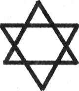
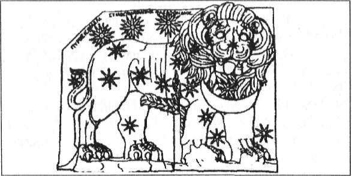
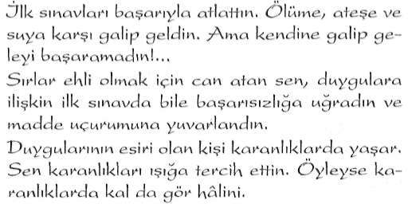
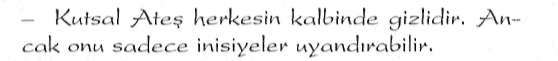
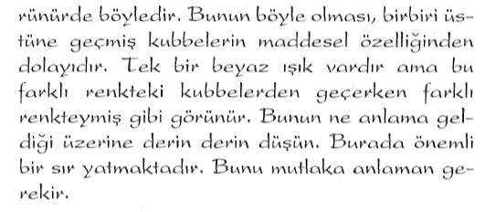

Büyük Piramit'tin mimarisinde gizlenen mesajlar 17. Yüzyıl Matematikçisi Graves'in Büyük Piramidi ziyaret edip onun boyutlarını ölçtüğü günden bu yana, Büyük Piramidi inceleyen hiç kimse, Piramit'in gelecekteki bir dönemde ortaya çıkacak şifreli mesajlar taşıyan bir yapı olduğuna kuşku duymamıştır.
Kadim dünyanın kültür ve felsefe anlayışı rakamlara dayanırdı. Geleceğe ait bir mesajın iletilmesinde rakamların kullanımının önemli bir yeri vardı. Rakamlarla şifrelendirilen pekçok mesaj bu şekilde gelecek nesillere iletilirdi.
Tasarımı abideler içinde en dikkatli şekilde gerçekleştirilmiş çağların en büyük abidesinin inşaatçılarının da, bu yöntemi piramitte kullanmamış olmaları imkansızdı. Nitekim daha önce aktarmış olduğumuz gibi Keops'un, boyutlarında matematiksel bir mesajın gizli olduğunu görmüştük. Ancak daha sonra yapılan araştırmalar Keops'un matematiksel şifresinin bunlarla kısıtlı olmadığını göstermiştir.
Keops'un sahip olduğu bu sayısal ve matematiksel şifrelerinden biri de, Dünya Coğrafyası'uda yeraldığı nokta ile ilgilidir:
Günümüzde kullanılan tek boyutlu açılmış dünya haritası gözönüne alındığında, Büyük Piramit'in dünyanın tam ortasına yerleştirilmiş olduğu görülmektedir!...
Bunu ilk farkeden kişi, 19. Yüzyıl'da Büyük Piramit'te incelemeler yapan İngiliz Astronom Prof. Piazzi Smyth olmuştur.
Prof. Smyth, Büyük Piramit'in tam olarak Ekvator'dan Kutba kadar olan mesafenin üçte birini belirleyen 30" Kuzey Enlemi üzerinde yeraldığını tespit etmiştir. Piramit Aşağı Mısır'daki tüm ovayı çevreleyen dağ sıralarının Güney ucuna yer-
Saklı Kütüphane
www.e-kitap.us
"ANTİK MISIR SIRLARI"
leştirilmiştir. Prof. Smyth'in çizmiş olduğu birinci haritadan da görülebileceği gibi, Kuzey kıyı hattı oldukça düzgün ve simetrik bir yay oluşturur. Bu yayın ait olduğu dairenin merkezi tam olarak Piramidin bulunduğu yere rastlar. Burası aynı zamanda Mısır'ın da tam merkezi'dir.
Piramid'in tabanını iki eşit parçaya bölen Kuzey-Güııey yönünde uzanan Boylam hattı, diğer bütün Kuzey-Güney Boylamları'na nazaran en fazla kara parçası ve en az deniz üzerinden geçen hattır. Yine benzer bir şekilde Piramid'in tabanından geçen 3()'" Kuzey Enlemi de, en fazla kara parçasını kaleden enlemdir.
Bu ilginç rastlantıyı Prof. Smyth şöyle açıklaırnştır:
"Dünya'nın her yanında insanların yaşayabileceği tüm kara parçalarım dikkatle topladığınız takdirde, hepsinin merkezi, Aşaği Mısır'da Büyük Piramitin bulunduğu yöreye rastlamaktadır."
(Bkz; Yan sayfadaki harita)
Bu aynı zamanda bir kehanet niteliği de taşır!... Büyük Piramit'in Tufan'dan önce yani Atlantis'in batışından önce yapıldığı dikkate alınırsa, o dönemlerdeki kara ve denizlerin dağılımının bugünkü gibi olmadığı ortadadır. Eğer Atlantik Okyanusu'nda halen Atlantis Kıtası varolmuş olsaydı Enlem ve Boylamlar'ın çizdiği oranlar hakkında aynı şeyleri söyleyebilmemiz mümkün olamayacaktı.
Eğer Piramid'in şifreli matematiğinde böyle bir oran gö-zetilraişse, o halde ortaya şöyle bir sonuç çıkmaktadır: Atlantisliler kıtalarının batışından sonra Dünya üzerinde nasıl bir coğrafi konumlanmanın oluşacağını önce-
Saklı Kütüphane
www.e-kitap.us
"ANTİK MISIR MİMARİSİ"
U t
KEOPS'UN DÜNYA ÜZERİNDEKİ KONUMU
Prof. Smyth'in 19. Yüzyıl'da dünya kamuoyuna duyurduğu orjinal çiziminden alınmıştır.
Saklı Kütüphane
www.e-kitap.us
"ANTİK MISIR SIRLARI"
den biliyorlardı!...
Bu da, yaşanacak büyük Tufandan sonra Dünya üzerinde nasıl bir kıtasal oluşumun ortaya çıkacağını, Mısır'da inşa etlikleri Keops Piramidi'ne şifreli bir şekilde sakladıkları anlamına gelmektedir İşte konunun belki de üzerinde durulması gereken en önemli noktalarından biri budur Keops bulunduğu coğrafik konumu itibariyle geçmişin büyük bir kehanetini taşımıştır Gize'deki Keops Şifreli Geometri'nin merkezi mi?
30. Enlem'le 30. Boylam üzerinde bulunan Keops, bulunduğu nokta itibariyle aynı zamanda, Dünya'mn diğer gi zemli noktaları ile de büyük bir uyum içindedir
Bermuda Üçgeni, Ejder Üçgeni ve Lhasa
Keops'un tam olarak tabanından geçen .30. Kuzey Enlemi de Dünya üzerindeki bazı gizemli noktalarla irtibatlıdır Gize'den ayın uzaklıkta olmak üzere Batı'da Bermuda Üçgeni, Doğu'da ise Japonya açıklarındaki Ejder Üçgeni bu enlemin üzerinde yer alır Merkezi Gize olan bu her iki simetri içinde bulunan bölgelerin geçmişi bugün bile açıklanamayan yaşanılmış bir dizi esrarengiz olaylarla doludur Üstelik aynı enlem Tibet'in gizemli başkenti Lhasa üzerinden de geçmektedir.
Piri Reis Haritası'nm Odak Noktası
Gize'yi coğrafi özelliği bakımından dikkat çekici hale getiren bir diğer belge de kuşkusuz ki, bir zamanlar tüm dünya kamuoyunu meşgul eden ve çeşitli iddiaların ortaya atılmasına neden olan ünlü Piri Reis Haritası'dır. Elimizdeki mevcut
Saklı Kütüphane
www.e-kitap.us
"ANTİK MISIR MİMARİSİ"
parçalardan anlaşıldığı kadarıyla bu haritanın projeksiyon sistemi Gize üzerinde odaklanmıştır.
Gize'den Anadolu'ya uzanan Şifreli Geometri
Şifreli geometriyle ilgili Gize'nin bir başka bağlantısı da Anadolu topraklarında kendisini gösterir.
Şimdi si/.e ilk bakışta belki de tesadüfmiiş gibi görünebilecek aşağıdaki şekilden bahsetmek istiyorum. Görmüş oldu
ğunuz gibi, Gize'deki Büyük Piramid'in bulunduğu bölge ile Anadolumuzun iki tarihi merkezini birleştirdiğimizde bunlar arasında mükemmel bir ''eşkenar üçgen" meydana gelmektedir. Haritamızda görmüş olduğunuz her üç merkez de bir
"TROYA - NEMRUT - GİZE" EŞKENAR ÜÇGENİ
Saklı Kütüphane
www.e-kitap.us
"ANTİK MISIR SIRLARI"
zamanlar önemli inisiyatik merkezlerdi. Bu merkezlerin böylesine bir geometrik bir düzen içinde yer alması sadece basit bir tesadüf müdür? Belki de evet...
Ancak tesadüfler bununla sınırlı değildir!...
Bir zamanlar önemli bir fonksiyon gören bu inisiyatik merkezler aynı zamanda önemli kehanet merkezleri olarak da işlev görüyordu... Yani kehanetlerin yapılabilmesine son derece elverişli olan "Spiritüel Coğrafya" üzerinde yer almaktaydılar.(30) Robert Temple "7he Sirius Mystery" adlı eserinde konuyla ilgili şu satırlara yer vererek, karşı karşıya kaldığımız bilmeceye işaret eder:
Eski kehanet merkezleri ilk bakışta rastgele oraya buraya serpiştirilmiş gibidir. Oysa dağılımlarında belirgin bir model vardır.
Bu model ayrıca antik çağda hayli ileri bir coğrafya ve ilişkili disiplinler bilgisine işaret eder. Bu kehanet merkezleri eski dünyada dinin uygulamaya geçirildiği ana merkezlerdi. Varlıkları asla bir tesadüfe bağlı olamazdı.
Tesadüfler bunlarla sınırlı değildir demiştik... Üçgenimize bir kaç unsur daha ilave ettiğimizde, ne denli ilginç bir durumla karşı karşıya olduğumuz daha iyi ortaya çıkmaktadır.
Üçgenimizin Gize'deki ucundan alacağımız açı ortay Anadolumuz üzerinde uzanan üçgenimizin tabanını tam ortadan ikiye bölerken Konya'nın üzerinden geçer ve biraz daha uzatıldığında yan sayfada görmüş olduğunuz gibi Ankara'yı işaret eder.
Anadolu'ya Horosan'dan gelmiş olan Mevlana'nın Mev-
' '
Saklı Kütüphane
www.e-kitap.us
"ANTİK MİSİR MİMARİSİ"
Ievilik İnisiyasyonu'nu oluşturacağı yer olarak Konya'yı seçmiş olması, tüm ezoterizmle ilgili araştırma yapanlarca bilindiği gibi, belirli bir spiritüel coğrafya bilgisine dayanmaktaydı.
Gelelim Ankara'ya...
Ankara sözcüğü "Çapa" anlamına gelen "Anchor" (ya da
"Ancor") isminden gelmektedir.
Bu isim Frigyalılar'a ait bir sözcüktür. Anadoluda yaşayan eski bir efsaneye göre Kral Midas bulduğu deniz çapasından dolayı bu bölgeye "Anchor" ismini vermişti.
Bu efsanenin mecazi bir anlam taşıyabileceği hep düşünülmüştü. Çünkü denize kıyısı olmayan bir bölgede, deniz ça-
"TROYA - NEMRUT - GİZE" ÜÇGENİYLE
KONYA VE ANKARA BAĞLANTISI
••:*'rtM:
Saklı Kütüphane
www.e-kitap.us
"ANTİK MISIR SIRLARI"
p a s ı n ne işi olabilirdi ki?!...
Yakın zamana kadar bunun nasıl bir mecazi anlama sahip olabileceğiyle ilgili hiç bir mantıksal açıklama yapılamamıştı.
Ancak daha sonraları ortaya çıkan ve sizlerle paylaştığımız geometrik şekil, bu anlamsızlığı bir anda ortadan kaldırmıştır. Yan sayfadaki şekilden de rahatlıkla anlaşılabileceği üzere çapanın sağ ve sol uçları Nemrut ve Troya Çapanın uç tepe noktası Ankara'yı gösterirken, çapanın alt sapının bitiş noktası ise Gize'ye denk gelmektedir
Troya - Nemrut - Gize eşkenar üçgeninin ortaya koydukları bununla da kısıtlı değildir...
Troya Nemrut hattını Batı yönüne doğru uzattığımızda yine tarihi geçmişi büyük gizemlerle dolu olan ve Troya ile önemli bir bağlantısı bulunan Cumae'ye denk geldiğini görmekteyiz. (31) Yan sayfada oluşan geometrik şeklin ne denli muntazam hatlara ve odaklara sahip olduğuna dikkatlerinizi çekmek isterim. Şilieli geometriye verilebilicck en güzel örneklerden biridir.
Gize'nin haricinde Mısır'la bağlantılı başka şifreli geometrik örnekler daha vardın Yeri geldiğinde bunlarla ilgili de birkaç örnek vereceğim...
PİRAMİT ŞEKLİNİN EZOTERİK ANLAMI
Piramitler şekilsel özellikleriyle enerjileri konsantre etme özelliğine sahip oldukları gibi aynı zamanda şekilsel özellikleriyle ezoterik anlamlara da sahiptir.
Koni şeklinin tabanının daire yerine köşeli kare bir biçime dönüştürülmesiyle elde edilen piramit şekli esas olarak ezoterik sembolizmde koni sembolünün içerdiği anlama sa-110
Saklı Kütüphane
www.e-kitap.us
"ANTİK MISIR MİMARİSİ"
Saklı Kütüphane
www.e-kitap.us
"ANTİK MISIR SIRLARI"
hiptir.
Piramidin şekilsel olarak neyi sembolize ettiğini anlamak için önce bu geometrik şekli parçalarına ayırmak gerekir Piramidi oluşturan geometrik şekiller iki kısımdan oluşur. Temeli kare, yan kenarları ise tepede birleşen dört adet üçgen...
"Ezoterik Semboller Lisanı"na göre "Daire" ile "Kare" sembollerinin birbirlerini tamamlayan anlamları vardın Ezoterik alfabede daire birincil semboldün Kare daireden türetilmiş ikincil bir semboldün Ancak karenin ikincil bir sembol olması onun daha az değerli olduğu anlamına gelmez.
Kare maddesel alemin varoluşunu temsil eder.
Daire ise, en genel anlamıyla evrensel varoluşu ve birliği temsil eder.
Bu tanımlamadan da anlaşılacağı üzere, Daire'nin spiritüel alanda, Kare'nin ise maddesel alanda kullanılan sembolik anlamları vardın
İşte bu anlamları itibariyle Ezoterizm'de kare haline getirilmiş daire sembolünden sözedilin Bu dönüşüm aynı zamanda birbirleriyle ölçülemez iki unsurun yani tanımlanabilir ve tanımlanamayan unsurların algılanmasını sağlan Kare ile daire daha kolay algılanın
("Aşağısı yukarıya yukarısı aşağıya benzer" ezoterik tanımlaması ile bu anlatmaya çalıştıklarımız bağlanlılı meselelerdir) Kozmik Mabet - Kutsal Mimari
Temeli daire olan asıl form kare ile kendisini somutlaştı-nr. Bu da kutsal mabetlerin temel fonnunu oluşturun Yani temeli kare olan yapıyı.
Temeli kare olan yapı "Kutsal Mimari"de üçgenle yükselmek zorundadır Çünkü üçgen kozmik hiyerarşinin sembo-
Saklı Kütüphane
www.e-kitap.us
"ANTİK MISIR MİMARİSİ"
lüdür. Aynı konik yükseliş gibi...
Maddesel alanda bu yükselişinin sonu kendisini piramit şekliyle ifade eder. O halde piramit şekline genel olarak baktığımızda, spiritüel alanın piramit şekliyle maddesel alanda tezahür etmiş ya da yansımış hali olduğunu söyleyebiliriz.
îşte "Kutsal Mimari"nin özünü ve temelini oluşturan ezoterik alfabenin kısa açıklaması budur.
Ezoterizm'de piramitsel mimarinin Kozmik Mabed'in bir yansıması olduğunun söylenmesinin nedeni sanırım şimdi daha iyi anlaşılacaktır. Evet... Piramit şekilsel özelliğiyle
"Kozmik Mabedi" yani spiritüel ve maddesel alanlarıyala birlikte, kozmik hiyerarşik varoluşu sembolize etmektedir.
Konuyla ilgili ünlü araştırmacı John Michell şunları söyler: Piramid'in orjinal işlevi "Dünyasal Güçler" ile
"Kozmik Güçler"i bir araya getirmek ve bu sayede yeryüzünün bu güçlerin verimli iş birliğirıi sağla-maklır. Bu olgu piramidin geotmetrik sembolizmi
içinde açıkça ortaya konulmuştur. Çünkü piramit
dairenin kare haline; getirilme sanatının yüce bir abidesidir.
Bu abide üçgenlerle yükselir ve konik tarzdan piramidal tarza dönüşür. Bu dönüşüm, konik tarzdan piramidal tarza olduğu gibi tersine de olabilir. Böylelikle piramitten koniye ge
çilir ki, bu ruhsal yükselişe karşılık gelir. Zaten piramidin içinde gerçekleştirilen inisiyatik çalışmalarla hedeflenen de buydu.
Piramit üst tepe noktasından aşağıya doğru Kozmik veya Spiritüel bir kaynaktan tesirin aşağıya inişini ve kozmik hiye-
,

Saklı Kütüphane
www.e-kitap.us
"ANTİK MISIR SIRLARI"
rarşiyi sembolize eder. Tepe noktası İlâhi Kelâm'ı. kozmik veya spiritüei kaynağın merkezini; tabanı ise (esirin hedei'i olan mekâm temsil eder.
Piramidin tabandan (epeye doğru olan çıkışı ise, varlığın kozmos içindeki yükselişini, evrimini ve ruhsallığa doğru olan ilerleyişini, geldiği kaynağa geri dönüşünü ifade eder.
Yeryüzü ve Gökyüzü'nün Evliliği
Musa Peygamber Mısır'dan ayrıldıktan sonra bu ezoterik sembolizmi iki üçgenin iç içe geçmesi ile dile getirmiştir. Bu sembol daha sonraları İsrailoğulları'nın dinsel ve ulusal simgesi haline gelmiştir. Şu anda Siouizınin sembolüne dönüşmüş olsa da temeli yukarıda dile getirmiş olduğumuz gibi çok eskilere dayanmaktadır.
Gökyüzü
Gökyüzü ile
Yeryüzü
Yeryüzü'nün Evlilği
Gökyüzü ile yeryüzünün evliliğini ifade eden bu sembolün içerdiği ezoterik anlam, günümüzde bu sembolü bayrak yapanlarca unutulmuş durumdadır.
Saklı Kütüphane
www.e-kitap.us
"ANTİK MISIR MİMARİSİ"
Tepe noktası yukarıya bakan üçgen göğü, aşağıya bakan üçgen ise yerin sembolü konumundadır. Bunların iç içe geçmesi tasavvufta "Vuslat" olarak ifade edilen göğün ve yerin evliliğinin yani göksel bilgilerin yeryüzünde ortaya çıkmasını ifade eder ki, bu durum varlığın şuurlanmasıyla ortaya çıkacak bir sürece karşılık gelir. Bir başka deyişle göksel bilgilerin insanda tezahür etmesi anlamına gelir.
Bu aynı zamanda inisiyasyonun sonunu gösterir. Amaçlanan hedefe artık ulaşılmış ve inisiye adayı büyük zincirin bir halkası haline gelmiş demektir.
İSMİNİN İÇİNDEKİ GİZLİ ANLAM
Piramidin sözlük anlamı da başlı başına büyük bir sırrı içinde barındırır. Günümüzde kullanılmakta olan Piramit sözcüğünün kökeni Mısır Lisanı'na değil, Yunanca'ya dayanır.
Piramit sözcüğü Yuananca'da "Pyros" sözcüğünden türetilmiştir. "Pyros" Yunanca'da "Ateş" anlamına gelmekteydi. Bu sözcüğün "Muhteşem Işık" anlamında mecazi kullanımı da bulunmaktadır.
İlk başta bu mimari yapıya "ateş" ya da "muhteşem ışık" anamına gelen bir sözcüğün verilmiş olması biraz garip-senebilir. Ancak bu yapının gizli kalmış bazı özellikleri dikkate alındığında, Antik Yunan'da bu yapıya neden böyle bir sözcüğün seçilmiş olduğu kolaylıkla anlaşılabilir... , Bu sözcüğün söz konusu yapı için kullanılmasının iki ayrı anlamı vardı: Birincisi "Ateş Taşı", ikincisi ise "Sirius Takım Yıldızı"
ile ilgilidir.
Saklı Kütüphane
www.e-kitap.us
"ANTİK MISIR SİRLARİ"
Orjinalleri Atlantis'te bulunan ve az önce üzerinde durmuş olduğumuz enerji çeken ve depolayan özel taşlar, bir zamanlar piramidin tepe noktasına yerleştirilmişti. O dönemlerde piramidi görenlerin onun ışıl ışıl parladığından söz etmelerinin nedeni de buydu. İşte Yunanlılar'ın bu yapıya ''Ateş ismini takmalarının birinci nedeni budur.
Keops Piramidi'nin ezoterik yönü ile ilgilenen tüm araştırmacıları meşgul eden bir sorun da, bir zamanlar piramidin üst tepe noktasında bulunduğu bilinen bu taşlarla ilgilidir.
2000 yıl önce bölgeye gelen bazı gezginler, zirvenin altındaki bir kaç taş sırasının yerinde olmadığından bahsetmişlerdir. Kayıp olan bu taşlara piramidin tepesinde oldukları için
"Kapak Taşı" adı verildi. Bu taşların mahiyeti hiç bir zaman anlaşılamadı, fakat bilinen bir gerçek varsa o da şudur: Bir zamanlar Piramdin cephesini kaplayan levhaların sökülerek Kahire'deki inşaatlarda kullanılmaya başlanmasından çok önceleri bu taşlar yerinden kaldırılmıştı.
Gelelim ikinci nedene...
Keops Piramidi'nin Kral Odası bilindiği gibi Piramit içindeki enerjilerin odaklandığı bir bölümde yer alır. Ancak Kral Odası'nın bir başka özelliği daha vardır.
Piramidin içindeki bu oda "Sirius Takım Yıldızı"n\ rahatlıkla gözlemleyebilecek bir açıda dizayn edilmiştir.
Piramidin iç kısımlarında bulunan bu odaya .Sirius'u gözlemlemeye olanak sağlayan bir tünel açılmaktadır. Bu tünel vasıtasıyla Piramidin derinliklerinde Sirius Takım Yıldızı'nm saçtığı ışık rahatlıkla gözlemlenebilinekteydi.
Antik Mısır Gelenekleri'nde Sirius'un kutsal sayılan bir yıldız olduğu ve Sirius'a diğer yıldızlara oranla çok ayrıcalık-
Saklı Kütüphane
www.e-kitap.us
"ANTİK MISIR MIAAARISI"
İl bir yer verildiği hesaba katılırsa, bu yıldızın ışıklarının muhteşem olarak adlandırılmasının son derece doğal karşılaması gerektiği ortaya çıkmaktadır.
İşte bu nedenle, Kral Odası'nın Sirius Takım Yıldızı'nı gözlemleyebilecek bir açıda dizayn edilmiş olması buna en güzel kanıttır. Mısır Ezoterik Sırları ile yakından temasa geçmiş olan Antik Yunan Kültüründe de bu durum gayet iyi bilindiği için, göklerin muhteşem ışığının gözlendiği bu mabede muhteşem ışık anlamına gelen bir isim vermiş olmalarının nedenini anlamak hiç de zor değildir.
Antik Mısır rahipleri Atlantisliler'den aldıkları bilgiler doğrultusunda Sirius'un dünya için ne denli önemli bir yıldız olduğunu öğrenmişler ve bu sırrı mabetlerinin derinliklerinde saklarlarken, aynı zamanda da mabetlerinin derinliklerinden bu yıldızın ışıklarını gözlemlemekte belki de bu yıldızın tesirlerine muhatap olmanın yollarını denemekteydiler.
Mısır'da Sirius'un Sembollü
Kadim toplumların tümünde olduğu gibi Kartal, Sirius'u ifade eden sembollerden birisidir. Sirius'u sembolize eden başka semboller de vardır. Mısır'daki Kartal Kanatları bilinen en eski Sirius sembollerinden biridir.
Saklı Kütüphane
www.e-kitap.us
"ANTİK MISIR SIRLARI"
İşte bu nedenle Yunanlılar'ın bu yapılara son derece güzel ve uygun bir isim bulmuş oldukannı rahatlıkla söyleyebiliriz.
Günümüzde gözler önünden uzak kalmış, toplum hafızasından silinmiş sırların başında, Sirius Takım Yıldızı'nın dünyamızla olan bağlantısı gelmektedir Bu sırrın üzeri, Tufan sonrası bizim kültürümüzde başlayan .sembolik eğitim sistemine geçişle birlikte örtülmüştür. Bu üstü örtülü sırrın anlaşılabilmesi için dinsel sembolizmin dilini çözmek gerekir Aksi takdirde bu sırra ulaşmak mümkün değildin Bu sır kökeni Tufan Öncesi kültüre dayanan bizim devremizin eski uygarlıklarına ait mitolojik metinlerde de kendisini gizlemektedir Ezoterik bilgilerini Tufan Öncesi Atlantisliler'den alınış
olan eski Mısır rahipleri bu sırrı biliyorlar ve bunu en gizli ve en güçlü ayinlerinde dışa vuruyorlardı. Kuşkusuz ki, bu sırda hiçbir zaman mabetlerin tlııvarlanndan dışarıya sızdırılmamış, inisiyelerce saklı tutulmuştur
O halde bütün buraya kadar üzerinde durduğumuz konulara dayanak, "Büyük Piramidin çok sayıda işlevi mi bulunmuştur" diye sorulacak olursa, buna kesin olarak "evet" cevabı vermemiz gerekmektedir. İsmiyle bile bazı sırları kendisinde barındırmış ve halen de barındırmaya devam etmektedir.
Firavun Keops'un ismi Büyük Piramit'e atfedildi.
İsimle ilgili bu bölümümüzün sonunda Büyük Piramit'in bir diğer ismi olan "Keops" üzerinde de kısaca durmak istiyorum.
Büyük Piramide Keops isminin verilmesi. Klasik Tarih Bilimi'nin verilerini doğru kabul eden bazı arkeologlarca bu yapının M.Ö. 3.500 yılında yapılmış olduğu ön kabulüne da-
Saklı Kütüphane
www.e-kitap.us
"ANTİK MISIR MIAAARISI"
yanır. Bu tarihte Mısır'ın firavunu Keops'tu. O halde Büyük Piramit bu tarihte yapıldıysa, bunu yaptıran da o dönemin firavunu olmalıydı. İşte bu düşünceden hareketle, Büyük Piramit'e firavunun adı atfedilmişdi.
Kurulan mantık doğru ama bilgi yanlıştı. Çünkü Büyük Piramit'in yapılış tarihi M.Ö. 3.500 değildi...
Bu yapının bu tarihten çok daha öncelerine ait olduğu bugün birçok arkeolog tarafından da kabul edilmiştir Bu nedenle Keops ismi, aslında Büyük Piramit için sadece bir zamanların ön kabulüyle ilgili bir anı olarak kalmış durumdadır.
PİRAMİTLERİN ENERJİSİ
Konunun bu yönü başka kitaplarda oldukça ayrıntılı olarak ele alınmış olduğu için, ben bunları tekrar etmek istemiyorum. Ama bu konuya hiç değinmeden de geçemezdim... Bu nedenle bu bölümü çok kısa tutmaya çalışacağım.
1900'lü yıllarda birçok kişinin, Büyük Piramit'in kimler tarafından ve ne zaman inşa edildiği konularını irdelediği sırada, Andre Bovis isimli bir Fransız araştırmacı çok ilginç bir şey keşifetti. Piramit'in içindeki odalardan birinde bulunan ölü hayvan ve artıklarının normalden çok farklı bir görüntüye sahip olduklarını farketti... Piramit'in içindeki bir şey sanki bu hayvanların çürümesini geciktirmiş gibi görünüyordu.
Fransa'ya döner dönmez Büyük Piramit'in boyutları ile orantılı küçük bir kopyasını inşa ettirdi ve ne olacağını görmek için içine bir et parçası koydu. Aradan günler geçmesine rağmen piramidin dışında tuttuğu et çürüyüp kokuşmasına karşın piramidin içindeki etin suyunun çekildiğini ve sanki mumyalanmışcasına çürüme eğilimi göstermediğini ve hiç bir kokuşmanın ette olmadığını gördü.
Saklı Kütüphane
www.e-kitap.us
"ANTİK MISIR SIRLARI"
Böylelikle Piramidal yapının içinde bir enerjinin ortaya çıktığını ilk keşfeden kişi olarak Andre Bovis tarihe geçmiş oldu. 1930lu yıllarda bu keşfini açıkladığında kendisinin metafizik araştırmalara ilgisinden dolayı zamanın bilimsel çevreleri bunu pek ciddiye almamışlardı.
1940'lı yılllarda Çekoslovakya'da Kari Drbal isimli bir başka araştırmacı piramidin traş bıçağını bileylediğini keşfetti. Ancak bunu bilimsel çevrelere onaylatması tam on yılını aldı.
Ne var ki, piramitlerin bu özelliği ile Batı dünyası pek fazla ilgilenmedi. Batı dünyasının ve özellikle de ABD'nin bu konuya olan ilgisi, SSCB'de yapılan Parapsikolojik araştırmalarla ilgili geniş bilgilere yer veren Shelia Ostrander ve Lynn Schroeder'in yayınladığı "Sovyet Rusya'da Fantastik Parapsişik Araştırmalar" isimli kitaptan sonra başlamıştır.
Batı dünyası Doğu Bloğu'nun Parapsikoloji ile bu denli yakından ve yoğun olarak ilgilendiğini ilk kez öğrenmiş oluyordu. Shelia Ostrander ve Lynn Schroeder'in yayınladığı kitapta Çekoslovakya'da Piramitler'in enerji odaklama özellikleriyle ilgili yapılan çok sayıda pratik çalışma da tüm ayrıntılarıyla dile getirilmişti.
Bu yazarlar ABD'de piramitlerle ilgili yoğun bir merak uyandırdılar. O günden bu güne kadar ABD'de pekçok araştırmalar yapıldı. Ancak bunların çok az kısrm yayınlandı. Bu konuyla ilgili yapılan yayınların tamamına yakını Avrupa ülkelerine aittir.
Piramitlerin odakladığı enerjilerle ilgili günümüze kadar yapılan araştırmalarda elde edilen sonuçları maddeler halinde sıralayacak olursak şunları söyleyebiliriz:
Bıçak ve Jiletleri biler.
Etin çürümesini engeller.
Saklı Kütüphane
www.e-kitap.us
"ANTİK MISIR MİMARİSİ"
Musluk suyuna kaynak suyu tadı verir.
T ü t ü n , ç a y ve kahveyi tatlılaştırır.
Bitkilerin büyümesini ve tohumların filizlenmesini hızlandırır.
Besinleri korur, bakterilerin üremesini engeller.
Su yosunlarının büyümesini geciktirir.
Pilleri şarj eder ^ i
TV ve radyo yayınlarının daha iyi alınmasını sağlar.
Şuuru dinçleştirir ve meditasyon çalışmalarında gevşeme haline geçişi kolaylaştırır.
İyilisme sürecini kısaltır. Acıyı hafifletir.
Cinsel gücü arlırır. (lsteği değil.)
Yorgunluk ve bitkinlik hissini çok kısa bir sürede ortadan kaldırır, canlılık verir.
Uyku üzerinde de çok pozitif etkileri vardır. Daha az bir süre uyuyarak daha fazla enerji elde etmemizi sağlar.
Parapsişik yetemîklerin gelişmesine ve su üstüne; çıkmasına yardımcı olur.
Söz konusu etkilerin en yoğun hissedildiği bölge, piramidin üst tepe noktasından tabanma doğru uzatılan doğrunun 1/3'lük birimindedir. Bu da yaklaşık olarak Kral Odası'nın bulunduğu yere denk gelmektedir. (Bkz: Arka Sayfa'daki şekil) Evinde piramitlerin bu etkileriyle ilgili deney yapmak isteyen okurlarımıza son bir hatırlatmada bulunmak istiyorum.
Kendiniz tahtadan, taştan hatta kartondan bile piramit yapabilirsiniz. Oransal boyutlarının Büyük Piramit'le tıpa tıp aynı olmasına gerek yoktur.
Dikkat etmeniz gereken tek şey: Piramidinizin dış yüzeylerinden birinin mutlaka Manyetik Kuzey yönüne çevrilmiş
olmasıdır. Manyetik Kuzey'le Coğrafik Kuzey'in kısmen
Saklı Kütüphane
www.e-kitap.us
"ANTİK MISIR SIRLARI"
farklılık gösterdiğini unutmayınız. Manyetik Kuzeyi bir pusula yardımıyla belirleyebilirsiniz.
GİZLİ YERALTI LABİRENTLERİ
Piramitler'den sonra Antik Mısır Mimarisi'nin en gizemli yapılarından bir diğeri de yeraltı tüneller ve galeriler sistemleridir. Fakat bu konu diğerine nazaran çok daha az bilinir.
Çünkü Piramider devasa boyutlarıyla gökyüzüne yükselirken labirentler yer altında kendilerini gizlemiş durumdadırlar.
Atlantisliler'ce Tufan'dan önce başlatılan çalışmalar sonucunda. Mısır çok önemli inisiyatik bir merkez haline getirilmişti. Bu merkezi, yeraltı tüneller ve galeriler si.stemleriyle Dünya'nın çeşitli noktalarındaki merkezlere de bağladılar.
Ancak yaklaşmakta olan Tufan'dan haberdardılar ve bunun için çeşitli önlemler almaları gerekmekteydi. Bu önlemlerden biri de, bu yeraltı tüneller sistemlerinin sularla kaplanmasına engel olmaktı. Orta Yucatan ve Mısır düz bir araziye sahip olduğu için, buralarda söz konusu amaca yönelik olarak Piramit'in içindeki enerjinin odaklandığı bölge siyah nokta ile gösterilmiştir.
Saklı Kütüphane
www.e-kitap.us
"ANTİK MISIR MİMARİSİ"
tünellerin içine su dolmasına engel olacak bariyerlere ihtiyaç vardı. İşte bu bariyerlik görevini görmek de piramitlere düşmüştü. Piramitlerin yapılmasının bir diğer nedeni de buydu...
Gizli yeraltı merkezlerini su baskınlarından kurtarabilmek...
Böylelikle piramitler, bu gizli yeraltı tünellerinin giriş noktalarına yerleştirildi.
Herodot'un Tarihi Kayıtlan da aynı $eyi söylüyor...
Ezoterik kaynaklarda dile getirilen bu bilgilere benzer sözlere, Herodot'un kayıtlarında da rastlamak mümkündür.
Herodot Mısır'la ilgili tuttuğu tarihi kayıtlarında, yeraltında inşa edilmiş olan ve onu bir dünya harikası olarak tanımladığı bir labirentten sözeder. Herodot labirenti bulduğunda, bu muazzam yapının toprak üstünde kalan bölümleri yıkılmış
durumdaydı. Labirent'in piramitlerden çok daha görkemli olduğunu belirtmiş ve görebildiği kısmını ayrıntılı bir şekilde tarif etmiştir. Herodot, Labirent'te yarısı yeraltında, öteki yarısı ise yer üstünde bulunan 3000 odaya rastladığından bahseder: Üst odaları bizzat gezdim ve ayrıntılı olarak inceledim. Binanın bekçileri yeraltı odalarına girmeme izin vermediler. Labirente üzerinde büyük şekiller işlenmiş olan 40 kulaç yüksekliğindeki bir piramidin altındaki muazzam bir yeraltı galerisinden girilerek geçilebiliyordu.
Herodot'un "Labirent" dediği bu yeraltı yapısının iyice yıpranmış haldeki kalıntılarının küçük bir kısmı, Gize'nin Gü-
ney-Batısı'nda yer alan Fayum yöresinin Güney-Doğu ucunda bulunan Hauwaret el Maqta yakınlarında Arkeologlarca ortaya çıkartılmıştır. Arkeologlar elde ettikleri bulguların, Herodot'un anlattıklarına uyduğunu da açıklamışlardır.
Saklı Kütüphane
www.e-kitap.us
"ANTİK MISIR SIRLARI"
Yılanoğulları Üçgen biçimli taşların altında...
Çok geniş bir alanı kaplayan yeraltı tüneller sistemlerinin ve bunların ana giriş noktalarında inşa edilmiş olan piramitlerin Tufan Öncesi Kültür tarafından gerçekleştirilmiş oldu
ğundan, Ezoterizm'in tanınmış yazarlarından Mme. Blavatsky de bahsetmiştir.
Mme. Blavatsky "Dzyan Kitabı"na ait olduğunu ileri sürdüğü gizli bir kayıttan bahseder.
Bu kayıtta şunlar yazılıdır:
"Bilgelik y ı l a n l a r ı n inleri şimdi üçgen biçimli t a ş l a r ı n a l t ı n d a d ı r . "
Ezoterizm'de Bilgelik Yılanları ya da Yılanoğullan tanımlamaları Galaktik Irka ait gelişmiş kozmik varlıkları ifade eder. Bu varlıkların bir zamanlar yeryüzüyle irtibata girdikleri tüm eski geleneklerde çok açık bir şekilde ifade edilmiştir.
Mu ve Atlantis Uygarlıkları da bu ırkın torunlarıdır.
Yukarıda sözü edilen üçgen taşlar ise piramitler için kullanılmış bir tanımlamadır.
Mme. Blavatsky de bu konu hakkında yaptığı açıklamada bu görüşü desteklemiştir. Dzyan Kitabı'ndan aktardığı kayıt hakkında şunlaıı söyler: • ;
Yukaridaki cümle, bize açıkça anlatmaktadır ki, üç ırkın yani 3. 4. ve 5. Irklar'ın üstatları yani bilgeleri piramitlerin altındaki yeraltı mekânlarında yaşamışlardır.
Saklı Kütüphane
www.e-kitap.us
"ANTİK MISIR MİMARİSİ"
DEVRENİN
DEVRENİN
BAŞLANGICI
SONU
Tannsaliaşmış
1. NESİL
Ruhılann Geri
Dönüşü
2. NESİL
3. NESİL
Altın Çağ
Öncel(i Tufan
7. NESİL
4. NESİL
Mısır
Kozmik - Evrensel
Astek, inka,Maya
Bilincin Hakimiyeti
Hint
Yunan
Altın Çağ'ın 6. NESİL
Başlangıcı
Büyük Doğal Afetler
5. NESİL Hz. Mu:
' BeklenenTufan
Hz. İSO
Sembolik Dini Eğilim
Hz. Muhammed
Sisteminin Bitişi
Kıyamet (Uyanış)
Şambola'nın Hakimiyeti
21. Yüzyılın Başlongıcı
Demir Çağ'ın Sonu
19. Yüzyıl
(20. Yüzyıl'ın Bilişi)
New Age Anlayışı
Parapsikoloji'nin Bilimselleşmesi
20. Yüzyıl'ın Başlangıcı
Spiritüalizm'in Ortaya Çıkışı
Rönesans&Reform Hareketleri
Düşüşün Son Noktası ve Çıkışın Başlangıcı
İNSANLIĞIN İNİŞ VE ÇIKIŞ SURECI'NDE GEÇİRDİĞİ DEVRELER
Ezoterizm'de sözü edilen 3. 4. ve 5. Irklar Atlantis ve bizim devremize aif uygarlıklara karşılık kullanılmıştır. Şekilden de anlaşıldığı gibi 2. Irk Mu Uygarlığı'na, 1. Irk ise Yılanoğulları ya da Tonrıoğulları olarak ifade edilen Goiaktik Uygarlığa aittir.
6. ve 7. Irk olarak sembolleştirilen süreç ise, çıkışla birlikte yaşanacak döneme ait insanlığı ifade etmektedir.
Saklı Kütüphane
www.e-kitap.us
"ANTİK MISIR SIRLARI"
SFENKS'İN SIRRI
Gize Piramitleri'nin (Keops, Kefren, Mikerinos) binlerce yıllık bir de bekçisi vardır... Bu bekçiliği yapan aslan bedenli insan başlı Sfenks'tir. Tarih boyunca birçok kez kumlar altında kalan Sfenks, en az piramitler kadar sırrını muhafaza eden Mısır'ın bir diğer bilmecesidir. Sfenks sadece Gize'nin kumları üzerinde yükselen dev piramitlerin değil, bunların yanı sıra kumların altında uzanan yeraltı galerileri ve tüneller sistemlerinin de bekçiliğini yapmış ve yapmaya bugün de devam etmektedir. Bir zamanlar iki ayağının altındaki bir noktadan bu yeraltı galerilerine geçilebiiiyordu. Bugün için bu giriş kapalı bulunmaktadır.
Tufan Oncesi'nin Şahidi
Sfenks ilk kez Batı Dünypası tarafından farkedildiğinde büyük bir bölümü çölün kumlarıyla kaplanmış durumdaydı.
Napolyon ve askerleri Sfenks'i ilk kez 18. YY'in başında gördüklerinde, anıtın sadece başı ve omuzları çöl kumlarının üstündeydi. Uzun yıllar boyunca Sfenks bu şekilde kaldı. 1816
- 1818 yılları arasında yapılan titiz kazı çalışmalarıyla bedeninin büyük bir bölümü kum altından çıkartıldı. Ancak pençeleri ile pençelerinin önündeki mabetlerin kum altından çıkartılması farklı zamanlarda gerçekleştirilen sistematik çalışmalarla gerçekleştirildi.
Böylelikle 7.3 metre uzunluğunda ve 19.8 metre yüksekliğindeki boyutlarıyla Sfenks yeniden çöl kumlarının üzerinde yükelebildi. Ve o gün bugündür, tüm dünyanın ilgisini üzerinde toplamayı başardı.
Sfenks kendi sakladığı sırlar kadar, başka bilinmezliklere de ışık tutmaktadır. Bunlardan biri de dünya tari-
Saklı Kütüphane
www.e-kitap.us
"ANTİK MISIR MİMARİSİ"
hini değiştirecek kanıtlara sahip olmasıdır. Bu kanıtlardan biri, aşınmasının nedenlerinde gizlidir. Günümüzde yapılan birçok araştırma Sfenks'teki aşınmanın rüzgar ya da kumdan çok, su nedeniyle olduğunu göstermektedir. Buna ilk dikkatleri çeken araştırmacılardan biri Schvvaller de Lubicz olmuştur. Bir diğer ünlü araştırmacı J.A. West "Serpent in the Sky"
isimli kitabında şu görüşlere yer vermiştir:
Prensip olarak Sfenk'in su erozyonuna maruz kaldığına itiraz etmek mümkün değildir. Eski Mısırın köklü iklim değişikliklerine ve dönemsel su ile ilgili felâketlere maruz kaldığı ispatlanmıştır. Bugünkü
kronolojik hesaplamalara göre Mısır'da meydana
gelen en son su baskım MÖ. l0.000lerde gerçekleş-
miştir.
Bu son derece önemli bir tespittir. Peki bu bize neyi gösterir? J.A. West, bunu tek bir cümleyle şöyle özetlemiştir: Sonuçla şunu düşünebiliriz Eğer su tarafından tahrip edilmişse, bu erozyona sebebiyet veren Tufan ya da Tufanlar öncesinde Sfenks'in yapılmış olması gerekir.
Evet, J.A. West'in de söylediği gibi Sfenks'in su nedeniyle zarar görmüş olması öncelikle bu yapının Tufan öncesinde yapılmış olduğunu göstennektedir. Çünkü ortaya çıkan tarih, Tufan'ın meydana geldiği tarihe denk gelmektedir. Bu aynı zamanda, Atlantis'in de tarih sahnesinden silindiği tarihtir.
Böylelikle ortaya çıkan bu tarihsel veri, Mısır Tarihin'nin de yeni baştan ele alınması gerektiğini bir kez daha göster-
Saklı Kütüphane
www.e-kitap.us
"ANTİK MISIR SIRLARI"
mektedir. Hatta sadece Mısır Tarihi'ni değil, tüm Dünya Tarihi'ni de...
Bu tarihsel sürece ve Klasik Tarihçiler'in Mısır Uygarlı-
ğı'na biçtikleri tarihi geçmişle ilgili çelişkilere tekrar geri döneceğiz; şimdi bu konuyu burada bırakarak, Sfenks'in kendisinde barındırdığı diğer bilinmezliklere kısaca göz atalım...
Şekilsel Sırları
Nasıl ki piramitler şekilsel olarak belirli bir anlam taşı-maktaysalar, aslan gövdeli insan başlı görünümünde olan Sfenks de, şekliyle ezoterik anlamları kendisinde barındırır.
Önce Aslan Sembolü'nü açalım, sonra da niçin insan başlıdır bunu görelim...
Ezoterizme Göre Aslan Neyin Sembolüdür?
Eski uygarlıkların mitolojilerinde ve geleneklerinde sıklıkla kullanılmış olan "Aslan Sembolü" öncelikle güç ve cesaretin sembolü olarak karşımıza çıkar. Bu anlamı bugün için de kullanılmaktadır. Ancak ezoterizmdeki anlamı çok farklıdır. Ezoterik olarak birbiri içine gizlenmiş birden fazla anlama sahiptir. En gene! manasıyla, "İlâhi İrade "yi sembolize eder. Ancak hepsi bununla kısıtlı değildir.
Biraz daha ayrıntıya girelim...
"Aslan Sembolü" hemen hemen her yerde "Güneş Sembolü" ile birlikte kullanılmıştır. Bunu Aslan heykellerinin ya da resimlerinin üzerlerine işlenmiş yıldızlardan anlamak mümkündür.
Birbirlerinden hayli uzak bölgelerde varlığını sürdüren farklı inisiyatik kültürlere ait aslan sembollerinin yıldızlarla

Saklı Kütüphane
www.e-kitap.us
"ANTİK MISIR MİMARİSİ"
süslenmiş olduğu görülmektedir. Örneğin Mısır ve Mitra Kültleri'nde önemli bir yer tutan aslan sembollerinde de durum aynıdır. (Bkz: Şekil A ve Şekil B) Şekil A'daki Mısır Kültürü'ne ait îkiz Aslanlar'ın üstleri yıldızlarla süslenmiş durumdadır. İki aslanın tam ortasında bulunan güneş kursu soldan ve sağdan iki yarım yay çizerek aslanların sırtlarına yaslanmıştır Şekil B'deki Mitra înisiyasyonu'na ait Nemrut Dağı heykellerinden olan aslan sembolü de aynı temaları içerir.
Şekil A
Şekil B
Saklı Kütüphane
www.e-kitap.us
"ANTİK MISIR SIRLARI"
Her iki aslan sembolünde de ortak tema yıldızlardır. Yani Güneşler...
Mitra İnisiyasyonu'na ait aslan sembolünün en üst kısmında bulunan üç yıldızın diğerlerinden daha ayrıcalıklı olarak çizilmiş olduğuna dikkatlerinizi çekmek istiyorum. Bu üç yıldızın hem diğerlerinden daha büyük olarak çizilmiş olduğunu hem de diğerlerine oranla daha fazla ışın saçmakta olduğu görülmektedir.
Bu yıldızlar üçlü bir yıldız olan Sirius A, Sirius B ve Sirius C'nin sembolleridir.
Ayrıca kabartmada tüm bu konuları birbirleriyle baglantı-landıran bir başka sembol daha vardır. Bu da aslanın göğsüne yerleştirilmiş olan yay sembolüdür.
Yay'ın, Ezoterizm'de göklerin hakimiyetinin sembolü olduğu hatırlanacak olursa sembollerin ne kadar birbirleriyle uyum içinde kullanılmış olduğu sanırım çok daha iyi anlaşılacaktır.
Astrolojik bir i$aret olarak Aslan
Bilindiği üzere "Ezoterik Dünya Tarihi" Tufan'dan sonraki bizim devremizin başlangıcı olarak M.Ö. 10.950 tarihini göstermektedir. Atlantis'in tarih sahnesinden silindiği bu tarih, "Astrolojik Çağlar"da "Aslan Burcu'na denk gelmektedir.
İşte Sfenks'in aslan vücudu aynı zamanda bu anıyı da günümüze taşımaktadır. Yani hem Atlantis'in batışını hem de bizim devremizin başlangıcını bu şekilde üstü kapalı bir şekilde dile getirmektedir.
Peki ama vücudu aslan olan bu mimari yapının başı neden aslan değil de bir insan başı şeklindedir?
Saklı Kütüphane
www.e-kitap.us
"ANTİK MISIR MİMARİSİ"
Günümüze bir kehanet...
Sfenks'in başının insan, vücudunun ise aslan olması öncelikle bir dönüşümün sembolüdür.
Vücudu farklı, başı farklı canlılar mitolojik bir anlatım üslubu olarak çeşitli ulusların efsanelerinde yer almıştır. Deniz kızı bunlardan biridir. Dönüşümden kasıt burada insanla aslan arasındadır.
Bu dönüşümü Ezoterizm "insanlaşan aslanlar" olarak tanımlar. Yani bilgelikten uzaklaşan bizim devremizin insanları burada anlatılmak istenmektedir. Daha önceki yayınlarımızda ayrıntılarıyla üzerinde durduğumuz, insanlığın aşağıya inişi bu sembolün içinde gizlenmiş durumdadır. Sfens bu haliyle bizim devremizin hemen başında henüz bu dönüşümün ilk başlangıcını ifade eder. Yani henüz sırların tamamen unu-tulmadığı dönemi.
Ancak .sembolün içindeki gizli mesaj bununla kısıtlı de
ğildir.
Başının insan fakat vücudunun aslan olması iki ayrı anlama sahiptir. Burada hem geçmişe hem de geleceğe ait bir mesaj gizlidir. Bir zamanlar aslanla sembolize edilen bilgeliğin bir gün yeniden dünya üzerinde yaşanacağı yani "insanların aslanlaşacağı" da burada anlatılmak istenmektedir.
Bu özelliğiyle geleceğe ait bir kehaneti de gündeme getirmektedir. Sfenks binlerce yıl öncesinin hem bir anısını, hem de binlerce yıl öncesinin bir kehanetini günümüze kadar sessiz bir şekilde taşımıştır. Sfenks bu kehanetinde şu sözleri fısıldamaktadır:
"Bir zamanlar kaybolan bilgelik bir gün yeniden ortaya ç ı k a c a k ve insanlar a s l a l a ş a c a k t ı r . "
Saklı Kütüphane
www.e-kitap.us
"ANTİK MISIR SIRLARI"
İnsanlığın fiziksel ve ruhsal açıdan aşamalı olarak aşağıya iniş sürecinin belli bir noktada dip yaptıktan sonra yeniden bir tırmanışa geçeceğini ve bunun da Kova Çağı'nda meydana geleceğini söyleyen ezoterik kayıtlarla, tüm bu anlattıklarımız birebir örtüşmektedir. Astrolojik Çağlar'ı gösteren çizelgemize bakarsanız, Aslan Çağı'nm tam karşıtı olan çağın Kova Çağı olduğunu derhal farkedersiniz. Eski gelenekler bu geçişin tam tarihi olarak 2012 yılını vermektedir. Aynı tarihe bu çizelgede de ulaşılmaktadır. (Bkz: Sy: 66'daki şekil) İnsanlar y a k ı n bir' gelecekte- y e n i d e n a s l a n l a ş a c a k t ı r .
Ne dersiniz, turistler de buna hazırlık mı yapıyorlar acaba?
Saklı Kütüphane
www.e-kitap.us
"ANTİK MISIR MİMARİSİ"
Bu tarihle ilgili birçok kehanet vardır. Bu kehanetlerden bazılarına göre, söz konusu tarih, aynı zamanda Atlantis'e ait çok önemli belgelerin, gün ışığına çıkacağının da tarihidir.
Mısır'da "Aslan İnsanlar" ve "Aslanlaşan insanlar" bu şekilde sembolleştirilmişti. Sembolün başı üzerine resmedilen yılan, 'Aslan İnsan"ın kökenini ve bilgeliğini göstermektedir.
Aslan ve yılan birbirlerini tamamlayıcı semboller olarak kullanılmıştır. Böylelikle "Aslan İnsan Sembolü"nün aynı zamanda Galaktik Irk'ın da sembolü olduğu anlatılmış olmaktadır.
Saklı Kütüphane
www.e-kitap.us
"ANTİK MISIR SIRLARI"
Piramitlerin binlerce yıllık bekçisi belli ki sadece piramitleri beklememiş, büyük bir sırrın da bekçiliğini yaparak bu sırrın günümüze kadar gelebilmesini sağlamıştır. Bunu bugün daha iyi anlıyoruz. Yakın gelecekte ise zaten herkes anlayacak!...
Aslanlı Yol
Anıtkabire giden ve "Aslanlı Yol" olarak isimlendirilmiş
olan yolun her iki kenannı süsleyen Aslan heykelleri, bu anlamlarından hangisi için seçilmiştir bunu bilemiyorum. Ama hangi anlamı için kullanılmış olursa olsun, hepsi bu yolun sonunda yatan yüce vazifelinin misyonuna uymaktadır.
Saklı Kütüphane
www.e-kitap.us
3
M.Ö. 12.000 - 10.000
TUFAN SONRASI VE DEMİR ÇAĞİ'NA GİRİŞ
Tufan Öncesi'ne ait sırların üstü örtülüyor..
Kutsal Bilim'in Sırları Mabetler'e çekiliyor..
Karanlığın Oğullan Şambala'yı Kuruyor..
Mu Kıtası'nın sulara gömülmesinden bu yana binlerce yıl geçmişti... Mu'nun batışından sonra Mu Kültürü uzun bir süre Atlantis'te yaşatılmaya devam etti. Bu süre içinde dünyanın kalbi Atlantis'ti...
Mu'nun sırları, Atlantis'ten çevre kıtalara yapılan göçlerle taşındı... Bizim kıtalarımızdaki çeşitli yörelerde merkezler oluşturuldu.
Bu merkezlerden en önemlilerinden biri Mısır'dı. Mısır tam anlamıyla Atlantisliler'ce kuşatıldı. Bölgeye çok önce gelen Mulular zaten burada uygun bir zeminin oluşmasını sağ-
Saklı Kütüphane
www.e-kitap.us
"ANTİK MISIR SIRLARI"
lamışlardı. Bu da Atlantisiler'in işini hayli kolaylaştırdı.
Yıllar süren göçler Mısır'ı adeta küçük bir Atlantis'e çevirdi. Orjinali Atlantis'te olan ve sırların merkezi konumundaki "Yüce Piramit"in bir benzeri Mısır'da da inşa edil-Ancak ortada çok önemli bir sorun vardı... Dünya'nın kapısını yeni bir doğal afetler zinciri daha çalmak üzereydi...
Elde edilen tüm bulgular bu seferki yıkımdan en çok zarar görecek bölgelerin başında Atlantis Kıtası'nın geleceğini gösteriyordu...
Fakat ortada bir başka sorun daha vardı...
Mu Kıtası'nın batışından sonra geçen süre içinde Atlantis'te "Osiris Öğretisi" adı altında yaşatılmaya devam eden Mu'dan gelen kozmik kökenli bu öğreti, ikiye ayrılmış durumdaydı. "Bir'in Oğullan" ve "Belial'in Oğullan" adı altında ikiye ayrılan Atlantisliler, kendi aralarında önce zıtlaşmayla başlayan ve sonrasında çatışmaya hatta kıta içinde büyük bir savaşa dönüşen bir kutuplaşmanın içinde bulunuyorlardı.
T U F A N YAKLAŞIYOR
İnsan bedeninde nasıl ki enerji giriş ve çıkış noktalan varsa, Dünya'nın da buna benzer şakraları vardır.
Atlantisliler Dünya'ya ait güç akımları başta olmak üzere, belirli kozmik güçlerin mahiyetini ve nasıl işlediğini biliyor ve bunları dikkatli bir şekilde yaşamlarının çeşitli alanlarında kullanabiliyorlardı.Çeşitli doğa olaylarına da bu güçler sayesinde müdahale edebiliyorlardı. Jeofizik afetlere karşı da Saklı Kütüphane
www.e-kitap.us
"M.O. 12.000-10.000"
bu güçlerden yararlanıyorlardı. Belirli yerlere diktikleri piramitler bu alanda da önemli bir fonksiyon görmekteydi.
Ancak şimdi durum çok değişmişti. Her iki grubun da ellerinde bulunan kozmik kökenli bilgiler ve sırlar farklı amaçlarda kullanılmaya başlanmıştı. "Bir'in Oğulları" adı verilen grup Osiris Öğretisi'ne ilk günkü safiyetiyle bağlı kalmış, buna karşın "Belial'in Oğullan" ise bu bilgileri ve bu bilgilerden elde ettikleri psişik - majik güçlerini negatif alanlarda kullanmaya başlamışlardı.
Böylelikle Dünya üzerinde ilk kez kara maji uygulamaları ortaya çıkmış oluyordu.Kozmik kökenli bilgilerden elde edilen psişik güçler ve buna bağlı olan majik uygulamaların negatif alanda kullanımı öncelikle dünyanın aurası üzerinde çok ağırlaştırıcı bir etkiye neden olmuştu. Kara maji uygulamalarından ortaya çıkan negatif yüklü enerjiler, Dünya'yı adeta "kcıra bir bulut" gibi her geçen gün biraz daha kaplıyordu.
Bu, daha sonraki yüzyıllarda etkilerini bizim devremiz insanlığına da taşıyacak olan, çok önemli bir yol ayrımının başlangıcıydı.
Psişik güçlerin negatif alanda kullanımı o denli ileri bir boyuta ulaşmıştı ki, bu tekniklerden yararlanılarak, yerkürenin tektonik güçleri bile faaliyete geçirilebilmekteydi. Ancak bütün bu yapılanların Yerküre'nin dengesini nedenli bozduğu hiç hesap edilmiyordu.
Belirli periyotlarla Dünya üzerinde yaşanan kozmik kökenli bazı doğal afetlere, bir de bu etkenler ilave olmuştu. Ka
çınılmaz son tüm gücüyle geliyorum diyordu...
Dünya'nın dengeleri bozuluyor...
Atlantis'deki Osiris Rahipleri yaklaşmakta olan felâkete Saklı Kütüphane
www.e-kitap.us
"ANTİK MISIR SIRLARI"
karşı halkı uyarmak için her yolu deniyorlardı.
Eski Mu Külütürü'ne sadık kalan Osiris Rahipleri kendi aralarında yaptıkları son toplantıda yaklaşmakta olan büyük yıkımı tüm ayrıntılarıyla ele almışlar ve yapılması gerekenleri birkaç ana başlıkta toplamışlardı:
1- Halihazırda "Osiris Öğretisi" adı altında varlığını sürdüren Mu Kültürü'nün gelecek kuşaklara her ne şekilde olursa olsun akta-nlmasına olanak sağlanmalı ve dünya üzerinden tamamen kaybolmasına izin verilmemeli.
2- Daha önce Mu'nun Naakal rahiplerince oluşturulan gizli yeraltı merkezleriyle irtibata girilmeli ve bu merkezlerin yeni kurulacak merkezlerle irtibatlandırılması sağlanmalı.
3- Yaşanacak afetlerden kısmen daha az etkilenmesi beklenen çevre kıtalardan Amerika ve Afrika'nın Kuzey bölgelerindeki tespit edilen yörelere sürdürülmekte olan göçler yoğunlaşırılmalı ve mümkün olduğunca halkın büyük bir bölümünün buralara göç etmesi için her türlü imkân seferber edilmeli.
Ve bütün bunlar olabildiğince çabuk gerçekleştirilmeliydi. Çünkü yaklaşmakta olan felâketler zincirine fazla bir zaman kalmamıştı.
Ancak kıtalarının batmayacağına inanan "Belial'in Oğullan" buna gerek olmadığını ileri sürüyorlardı. Beklenen doğal afetlerin kıtalarını kesinlikle batırmayacağından emindiler.
Örnek olarak da daha önce Mu Kıtası'nın batışına neden olan doğal afetlerde Atlantis'in batmamasını gösteriyorlardı, Evet... Atlantis'in belli bir bölümü parçalanarak sulara gömüldüyse de tamamen ortadan kalkmamıştı. Ancak bu se-
Saklı Kütüphane
www.e-kitap.us
"M.O. 12.000-10.000"
fer tehlikenin merkezinde Atlantis vardı. Çünük tektonik ak-tivite hissedilir bir şekilde d e n g e s i z l e ş m i ş durumdaydı. Ama Belialin Oğulları için korkulacak bir şey yoktu!...
Başını rahiplerin çektiği bu iki grubun çevresinde halk tam anlamıyla ikiye bölünmüş durumdaydı. Fakat bu bölünüş
yan yarıya değildi. İbre "Belial'in Oğulları"ndn yana daha ağır basıyordu. Halkın yarıdan çok daha fazlası "Belial'in Oğullan"nm yanında yer almıştı... Vatanlarından ayrılıp her-
şeye yeniden başlamanın zorluğu da buna eklenince, halkın büyük bir bölümü ilk başta göç etmek istemedi.
Ta ki, felâketler bir biri arkasına gelmeye başlayıncaya kadar... Atlantis büyük sarsıntılarla parçalanmaya başlamıştı...
Sonunda "Beliarin Oğullan" da göç etmekten başka bir şanslarının kalmadığını farkettiier...
Benzer fakat farklı iki uygarlık ortaya çıkıyor: Mayalar ve Aztekler
Atlantisliler kıtalarının tamamen sulara gömülmesinden önce her iki grubun temsilcileri çevre kıtalara göç ettiler.
Avrupa üzenden Orta Asya'ya kadar göçler düzenlendi.
Ancak en fazla göç alan topraklar Amerika Kıtası oldu. Amerika Kıtası'na her iki grubun temsilcileri de gelerek yerleşim birimleri oluşturdular.
"Belial'in Oğullan" ve yandaşları yoğun olarak Kuzey Amerika topraklarına yerleştiler. Daha sonraları tarih kitapla-nrruzda karşımıza çıkacak olan Aztekler'in atalarını oluşturdular ve burada da Kara Maji uygulamalarına devam ettiler.
Buna karşılık "Bir'in Oğullan" Orta Amerika'yı tercih ettiler. Çünkü bu bölgeye ve bu bölgenin daha Güney uçlarına daha önceleri Mulular tarafından göçler düzenlenmiş ve
Saklı Kütüphane
www.e-kitap.us
Saklı Kütüphane
www.e-kitap.us
"M.O. 12.000 - 10.000"
Mayalar adı altında bir yerleşim birimi oluşturulmuştu.
"Bir'in Oğullan" bu bölgede kendilerine kolaylıkla bir yer edinebildiler.
"Belial'in Oğulları"na bağlı grupların Mayalar'ın bulunduğu bölgenin Kuzey kısımlarına yerleşmeleri, Orta Amerika'da bulunan Mayalar'dan çok farklı bir toplumun. Kuzey Amerika'da ortaya çıkmasına neden olmuştu... Günümüzde Amerika Kıtası'mn yerlileri olarak nitelendirdiğimiz Aztekler ve Mayalar'ın temelde birbirlerine benzeseler de birçok noktada ayrı özellikler göstermelerinin nedeni işte buna dayanıyordu... Örneğin, Mayalar'da insan kurbanlarının görülmemesine karşın Aztekler'de inanılmaz boyutlara ulaşan insan kurban edilişinin nedeni de, bu göçierdeki farklılıklara bağlıdır.
"Belialin'in Oğullan" ŞAMBALA'yı kuruyor...
Belial'in Oğullan'nın başını çeken rahiplerin önde gelenleri, sahip oldukları gücü daha da artırmak ve etkilerini daha geniş alanlara yayabilmek için, Avrupa'dan Orta Asya'nın içlerine ve Tibet'in dağlık kesimlerine kadar gelip buralarda gizli yeraltı tüneller sistemleri ile bağlantılı gizli tarikatlar oluşturdular. Bu oluşturulan gizli yeraltı tarikatı, örneğini daha önce Mulular tarafından oluşturulan gizli yeraltı ezoterik merkezi Agarta'dan almıştı.
Böylelikle daha önce Mu'dan gelen Naakal rahiplerince kurulan merkeze alternatif olarak, bir başka merkez daha kurulmuş oldu. Bu merkez daha sonraları Ezoterizm'de Şambala olarak anılmaya başlandı.
Zaman zaman günümüzde yayınlan bazı kitaplarda Agarta ile Şambala'mn sanki iki ayrı merkez değil de, tek bir merkezin iki ayrı ismiymiş gibi kullanılması, bu her iki grubun da köken itibariyle aynı sırlara sahip olmasından kaynaklanmış-
Saklı Kütüphane
www.e-kitap.us
"ANTİK MISIR SIRLARI"
tır. Ancak arada önemli bir farkın olduğu, bazen bilerek bazen de bilmeden göz ardı edilmiştir. Bu iki grubun en büyük ortak noktası her ikisinin de Atlantis'ten gelmiş olmalarıydı. İşte bu nedenle bazı yazarlarca, bu grupların birbirlerinden bir farkmın olmadığı düşünülmüş olabilir. Ancak bu merkezlerden biri pozitif alanda diğeri ise negatif alanda faaliyet göstermekteydi... Ve bu, günümüze kadar böyle devam etmiştir!...Bu merkezler bizim devremizde çok önemli fonksiyon görmüşlerdir. Özellikle de Şambala...
Demir Çağı için ŞAMBALA'ya ihtiyaç vardı!...
Bu ara başlığımızın ifade ettiği anlam ilk başta biraz tuhaf gelebilir. Evet, Demir Çağı için Şambala'ya ihtiyaç vardı.
Şimdi hem anlatılması, hem de anlaşılması oldukça zor olan bu konuyu çeşitli açılardan ele alarak, elimizden geldiğince anlaşılır bir şekilde açmaya çalışalım:
"Şambala" ve "Agarta" ile ilgili yayınlanmış ve kaynak gösterilebilecek oldukça az sayıda kitap vardır. Bu konuyla ilgili elimizdeki bilgi ve belgelerin büyük bir bölümü Ezoterik Öğretiler'den elde ettiğimiz bilgilere dayanmaktadır.
Ancak az sayıda da olsa bazı yazarlar Şambala konusuna değinmekten çekinmemişlerdir. Çekinmemişlerdir diyorum çünkü çekinmelerini gerektirecek bir meseleyle karşı karşıya olduklarını biraz sonra siz de yakından farkedeceksinizi...
Bu konuda bazı açıkalamalar yapabilen ender yazarlardan biri Jacques Bergier'dir. "Les Livres Maudits" isimli kitabında bu konuyla ilgili olarak Jacques Bergier, Şambala'nın uzantılarına "Kam Tarikat Üyeleri" tanımlamasını getirmiş
ve bu tarikatın amacını şöyle açıklamıştır:
Saklı Kütüphane
www.e-kitap.us
"M.O. 12.000- 10.000"
insanları bilgelikten uzak tutmak, cahil bırakmak ve bir lakım sırlarla insanların karşılaşmalarını önlemek amacıyla büyük bir organizasyon kurulmuştur. Bu organizasyonun üyeleri tüm dünyaya yayılmış durumdadır. Bu tarikat ezoterik bilgileri ve belgeleri yöntemlice yok etme konusunda büyük bir başarıya ulaşmışlardır. Bu kara cüppelilerin uygarlık kadar eski oldııklarıyla ilgili elimizde ciddi deliller bulunmaktadır. , Evet, gerçekten de, "Kara Tarikat Üyeleri"nin uygarlık tarihi kadar eski olduklarıyla ilgili elde ciddi deliller bulunmaktadır. Elimizdeki bulgular, "Kara Tarikat Üyelen "nin bizim devremize ait uygarlık tarihi içindeki her dönemde etkin bir rol oynadıklarını göstermektedir. Bunları maddeler halinde aktarmak bile birkaç kitap konusu olacak kadar çoktur.
Şambala'nın tarih içinde; geçmişten günümüze kadar yaptığı inanılmaz komploları ve dünyadaki hangi grup, kurum ve kuruluşlarla hatta devlet yöneticileriyle irtibata girdiklerini belgeleriyle ortaya koymak mümkündür. Bunların birçoğu bilinmektedir. Ancak bunların çok küçük bir kısmı kamuoyuna duyurulmuş durumdadır.
Bu konuda "Gizli Sırlar Öğretisi" kitabımda "Nazi Karargahında Tibetli Rahiplerin İşi Neydi?" başlığı altında Na-ziler'in irtibata girdikleri "Gizli Tule Tarikatı" ile ilgili bazı bilgilere yer vermiştim. (32) Şimdi de güncel bir konuya dikkatlerinizi çekerek, bu konuyu şimdilik kapatmak istiyorum: ABD'deki Şahinler Grubu nasıl bir gruptur?
Belli bir süredir dünyayı tek başına yöneten ABD'nin özellikle şu anda yönetimini elinde tutan ve adına "Şahinler Grubu" denilen oluşumun da titizlikle tahlilinin yapılması Saklı Kütüphane
www.e-kitap.us
"ANTİK MISIR SIRLARI"
gerekmektedir. Başkan Bush'un üyesi bulunduğu bu grubun da. bir zamanlar Hitler'in irtibata girdiği "Tule Tarikatı "a çok benzer özellikler göstennektedir.
Bir zamanlar Hitler'in bağlantılı olduğu Tule Tarikatı ile ilgili bir kitap yazan ve daha sonra Almanya'da kitabı yasaklanan .Jan van Helsing, ABD ile ilgili olarak "Aldeheran Girişimi" isimli kitabının sunuşunda şu anda üzerinde durduğumuz konumuzla dolaylı olarak ilişkili bulunan son derece dü
şündürücü sözlere yer vermiştir.
Hiç bir yorum yapmadan Jan van Helsing'in bu sözlerini şimdi sizlere akarıyorum. Sanırım bazı çağrışımlar yapacaktır.
Yorum size ait...
Seksenli yılların ortalarına doğru Ufo konuları birden bire değişti. Bazı negatif Grili varlıkların, Ame-rikanın gizli ve karanlık yöneticileri (İlluminati) ile anlaşmalar yaptığı yönde haberler ortayaya yayıldı.
Bu anlaşmaya gönre bu Grili varlıkları insanlar üzerindie çeşitli incelemeler ve deneyler yapmalarına izin viriliyordu. Birden daha önceleri çok görülen insanımsı-uzaylılar temasların, azaldığı görülüyor.
Hollywood'da da Grililer ile ilgili filmlerin ardı arkası kesilmiyor. ('lndependence Day' gibi) Peki birden bire bu insanımsı-varlıklar nereye kayboldular? Neden hu kadar yakınlık gösteren ve bizlere yardım eden bu varlıklar hakkında, yakın bir zamanda hirşeyler duymuyor veya okuyanuyoruz?
Nedeni bizim yöneticilerimizin ve onun suç ortakla-
Saklı Kütüphane
www.e-kitap.us
"M.O. 12.000- 10.000"
rının gözüne battığı için mi? Cevabı evet ise, hangi sebeple? Çeşitli medya kuruluşlarının yaptıkları karalama kampanyalarının bu konular ile ilişkisi var mı? Bunun ve bu gibi konuların arkasında neler
var?...
Neden hep negatif bilgilerin kaynağı Amerika?!...
Neden diğer ufologların iddia ettikleri gibi insanımsı-uzaylılar Almanya ve Isviçre ile ve "negatif" varlıklar Amerika ile anlaşmışlardı? Neden tam tersi değil Bunun gibi birçok soru geliyor insanın aklına. Ama şurası bir gerçek ki, birçok bilgi eksik ve puzzle tam olarak çözülemiyor.
Evet, neden hep negatif bilgilerin kaynağı Amerika?...
Jan van Helsing'in sorduğu bu sorunun açıklığa kavuşabilmesi için, ABD yöneticilerinin irtibatlı olduğu gizli güçlerle olan durumlarını gün ışığına çıkartmak gerekir.
Neyse... Zamanı gelince bütün bunlar da gün ışığına nasıl olsa çıkacaktır... Ayrıntılarına girmeden sadece şunu söyleyebilirim ki, Şambala ile en fazla irtibat kuran ülkenin ABD olmasına şaşırmamak gerekir. Çünkü şu anda üzerinde yaşadıkları topraklara bundan yaklaşık 12.000 yıl önce en fazla göç, Şambala rahiplerince gerçekleştirilmiştir.
Görüldüğü gibi bazı meselelerin cevaplan çoğunlukla geçmişin bilinmezliklerinde gizli bulunmaktadır. Bu nedenle en iyisi biz yeniden tarihin derinliklerine geri dönelim...
Şambalaya niçin ihtiyaç vardı?... Bu soruyu irdelemeye devam ediyoruz...
Saklı Kütüphane
www.e-kitap.us
k'
"ANTİK MISIR SIRLARI"
Şambala ile Agarta'nın Ortak Yönü
Her iki gruba da bakıldığında, hem Şambala'nın hem de Agarta'nın ezoterik bilgileri gizledikleri görülmektedir. Bu bakımdan konu ele alındığında her iki grup arasında uygulamada bir ortaklıktan sözedilebiiir.
İşte konunun aydınlatılması gereken bir diğer noktası da burada düğümlenmektedir. Mu kökenli kozmik öğreti hiçbir zaman bizim devremizde açık olarak insanlara anlatılmamıştır. Bu sırlara sahip rahiplerce bunlar gizli tutulmuş, çok az sayıdaki kişiye bu bilgiler açıklanmıştır. Bu açıdan bakıldığında sanki bu rahiplerin de negatif kutba hizmet ettiği düşünülebilir. Ancak bu bakış açısı, gerçeği yansıtmamaktadır. Çünkü bu grubun rahipleri ve bu gruba bağlı sonra gelen rahipler, bu bilgileri hiçbir zaman negatif alanda kullanmamışlardır. Bu bilgileri saklamışlar ancak lıiçbir zaman yok etmemişlerdir.
Çünkü onların gayet iyi bildikleri bir gerçek vardı: Dünyanın fiziksel ve ruhsal olarak aşağıya iniş sürecine girebilmesi için bu bilgilerin üstünün örtülmesi gerekmekteydi.
İnsanlığın aşağıya inebilmesi için gerekli olan bir diğer şart da, negatif enerjilerin pozitif enerjilere nazaran daha çok kullanılmasınm gerekliliğiydi. Bu açıdan bakıldığında Şambala'nın insanlığın aşağıya iniş sürecinde ileıieyebilmesinde çok önemli bir fonksiyon gördüklerini rahatlıkla söyleyebiliriz.
Evet, bu açıdan bakıldığında Şambala çok önemli bir vazifeyi üstüne almış olduğu görülmektedir. Çünkü Demir Çağ olarak nitelendirilen bizim devremize ait insanlık ailesinin pozitif enerjiden daha çok, negatif enerji kullanma tatbikatı yapmaları hedeflenmişti. Peki ama neden? Bunun tek bir cevabı vardı. İnsanlığın ruhsal ve fiziksel gelişimleri için böyle bir inişin tatbikatı gerekliydi. Ruhun kendi içindeki ışığı en Saklı Kütüphane
www.e-kitap.us
"M.O. 12.000- 10.000"
zor şartlarda bile yaşatabilme hünerini gösterme becerisini nasıl göstereceğinin bir sınavı içine girilmişti. Bu süreç, bizim devremizin başlangıcından günümüze kadar sümıüştür. Bu süreç içinde yani 10.000 yılı aşkın bir süredir, dünya üzerinde eşi benzeri görülmemiş negatif alanda gerçekleştirilen tatbikatlarla son derece zorlu bir dönem yaşanmıştır.
Bu süreç içinde dünya üzerinde bitip tükenmeyen savaşlar bunun en canlı örneğiydi. Savaşlar ne yazık ki, günümüzde de hâlâ devam etmekte ve bu negatif sürece hizmet edenler hâlâ bulunmaktadır.
Şambala ve "Şeytan Plânı"
Dini Literatür'de Seylan'la anlatılmak istenen meselenin özüyle, bu ezoterik geçmiş arasında önemli paralellikler vardır.
Kur'an-ı Kerim terminolojisinde de Şeytan, aslında bir melek olarak anılır ama isyan ettiği için diğerlerinden ayrılır.
Yani aynen, aynı bilgilere ve kökene sahipken Agarta ile Şambala'nın birbirlerinden ayrılması gibi...
Dini terminolojide Şeytan olarak sembolleştirilen bu kavramla anlatılmak istenen, negatif enerjilerin yoğunlaştığı merkezdir. Dinlerde ve mitolojilerde geçen şeytan sembolü öncelikle negatif fiil ve enerjilerin sembolüdür. Daha açık olarak söylemek gerekirse: Negatif enerjileri yaymakla görevli bir ruhsal planın dini terminolojideki ismidir.
Dünya üzerinde nasıl Agarta ve Şambala olarak biri pozitif diğeri ise negatif kutbun temsilcileri ortaya çıkmışsa, bu oluşumun desteklenmesi ve yaygınlaştırılabilmesi için ruhsal alanda da bunların desteklenmesi gerekmekteydi. Hatta önce ruhsal planda bu oluşumun gerçekleştirilmiş olduğunu söyleyebiliriz. Önce ruhsal planda gerçekleşen bu kutuplaşma da-
9i
Saklı Kütüphane
www.e-kitap.us
"ANTİK MISIR SIRLARI"
"'i
ha sonra fizik dünyaya yansımış ve Agarta ve Şambala olarak iki ayrı kutup ortaya çıkmıştır.
Kur'an-ı Kerim'de sözü ediler Şeytan planıyla irtibatlı olan rahiplerin de Şambala'nın rahipleri olduğunu söylemeye gerek yok sanırım. Nitekim Orta Çağ'da yapılan ve Şeytan'ı tasvir eden tablolardan birinin de adının Belial olması son derece düşündürücüdür...
Artık, konumuzu toparlayalım...
Yine dini literatürde Şeytanla ilgili bir başka tema daha dikkatlerimizi çeker: Şeytan belli bir süre serbest bırakılmıştır ama zamanı gelince bu gücü elinden alınacaktır. Peki ne zaman? Dini metinler buna da bir süre göstermişlerdir: Kıyamette...
Kıyamet'in insanlığın uyanışı anlamına geldiği dikkate alındığında mesele bir anda gözlerimizin önünde daha netleşmeye başlayacaktır. Şeytan'ın görevi tamamlandığında insanlık kıyama varacaktır. Ayağa kalkacak ve ölü anlayışlardan uyanacak yani şuurlanacak ve bilgilenecektir.
Sözünü ettiğimiz dini terminoloji ile ezoterik terminolojiyi birleştirirsek, ortaya çıkan sonuç şudur: Şambala'nın hakimiyeti bittiğinde ya da bir başka deyişle Agarta hakimiyeti ele aldığında, insanlık yeniden çıkışa ge
çecektir. Bu tüm dinlerde vaadedilmiş bir sondur ve bu sona doğru insanlık hızla yol almaktadır. Böylelikle insanlığın önündeki bu iniş ve sonrasında yeniden çıkış sürecinin yaşanması gerçekleşecektir.
Şambala'nın da katkılarıyla insanlığın aşağıya inişi ger
çekleştirilmiş durumdadır. Ancak unutulmaması gereken ve bizi bugün için asıl ilgilendiren mesele, artık bu gidişatın de
ğişme vaktinin gelmeye başlamış olmasıdır.
Saklı Kütüphane
www.e-kitap.us
"M.O. 12.000- 10.000"
Bunu neye dayanarak söylüyoruz?
Bunu binlerce yıl öncesine ait ezoterik bilgilerde yer alan
"insanlığın aşamalı olarak aşağıya iniş ve çıkış grafiği"ne bakarak söylüyoruz. Bu grafikte yer alan değişimler ve bu değişimlere denk gelen tarihler kesin veriler olmayıp, genel bir sürece ait gidişatı gösteren bir özellik gösterir. Yani saati saatine bir tarihlendirme söz konusu değildir ama bu gidişatın nasıl bir sürece yayıldığı ile ilgili genel bir fikre sahip olmak mümkündür.
Burada önemli olan bir diğer nokta da, bu değişim sürecinin fiziksel ve ruhsal olarak birbirleriyle bağlantılı olmasıdır. Yani dünya üzerinde sadece ruhsal değişim değil, jeofiziksel, iklimsel ve benzeri fiziksel değişimlerin de daha önce yaşandığı gibi bundan sonra da yaşanacak olmasıdır, (33)
Saklı Kütüphane
www.e-kitap.us
Saklı Kütüphane
www.e-kitap.us
"ANTİK MISIR SIRLARI"
Mısır, kadim çağlarda "Kutsal Bilim"in en önemli merkezlerinden biri ve insanlığı aydmlatan büyük inisiyeleri yetiştiren bir okuldu... Bu merkezde yetişenler arasında bazı filozoflar da bulunmaktadır Ancak şurası bir gerçek ki, bu merkezlerde yetişenlerin sadece çok küçük bir kısmı hakkında bir bilgiye sahip bulunmaktayız.
Bir zamanlar Mısır'da yaşananlar dünya tarihinin en gizli kalmış konularından biridir Ve bir zamanlar burada yaşananların büyük bir bölümü günümüzde hâlâ gizliliğini korumaya devam etmektedir O dönemlerde mabetlerden dışarıya sızdınImamaya özen gösterilen sırlar o denli iyi muhafaza edilmiştir ki, bazı filozof ve peygamberlerin bu merkezlerde yetiştirildikleri bile açıkça insanlık tarihinde yer bulamamıştır.
înisiyeler için bir zamanlar yeryüzünü aydınlatmış olan
"Osirisin Işığı" bugün terkedilmiş mabetlerde artık sönmüş
durumdadır Thot'un binlerce yıl öncesinden söylemiş olduğu kehanet niteliğindeki şu sözleri, bugün tam anlamıyla gerçekleşmiş bulunmaktadır: Evet... Taşlara oyulmuş bir tarih... Bu taş sayfaların üzerine işlenmiş hiyeroglifler arkeologlar ve tarihçilerce bugün çözümlenebilmiştir. Ama bütün bunlara rağmen ortada yine de önemli bir sorun kalmıştır:
Bu gizemli tarihin ve kültürün sırlarına nüfuz etmek...
Saklı Kütüphane
www.e-kitap.us
"MISIR INISIYASYONU"
Bu sır, rahiplerin ezoterik öğretilerine ilişkin bir sırdır ve bu sırları gün ışığına çıkartabilmek için Mısır İnisiyasyonu'nun gizli yolunu aydınlığa çıkartmak gerekir.
İşte bunu yapabilmek için şimdi tarihin geçmiş dönemlerine geri dönüyor ve bir zamanlar Mısır'daki mabetlerin içinde yaşananları gözümüzün önünde canlandırmaya başlıyoruz: SIRLAR ÖĞRETİSİ'NE GİRİŞ
Tarih: M.Ö. 13()0'ler... Ramses dönemi...
Musa Peygamber'in de Mısır'da yaşadığı dönem, işte bu dönemdi...
Yunan kentlerinden, Trakya'dan, Anadolu'dan ve Mezopotamya'dan kopup gelen çok sayıda insan, mabetlerinin ününü duyduğu Mısır'a gelmekten kendilerini alamıyordu...
Menfis'e vardıklarında gördükleri karşısında büyülü bir dünyanın içinde kendilerini buluyorlardı. O kendine has kıyafetli insanlar, haşmetli yapılar ve halk şenlikleri onlara Mısır'ın zenginliğini ve bolluğunu göstermeye yetiyordu.
Mabedin en iç bölümünde büyük bir gizlilik içinde yapılan kutsama ayininden çıkıp, on iki Mısırlı'nın taşıdığı tahtırevanına binen Firavun'u ilgiyle seyrediyorlardı... Tahtın önünde yüıüyen bir grup rahip, altın nakışlı bir yastığın üzerine konmuş kraliyet nişanı "Koç Başlı Asa "yi taşıyorlardı. Tahtın arkasında ise, genç rahip adayları geliyordu... Önde giden rahiplerin başlarındaki beyaz taç ve göğüslerinden sarkan mükemmel bir işçilik ürünü olan koç ve aslan nişanları, onları seyredenleri adeta büyülüyordu.
Saklı Kütüphane
www.e-kitap.us
"ANTİK MISIR SIRLARI"
Gece olunca bayraklarla donanmış sandallarda Nil'in kıyılarında yanan meşalelerin altında konser veren çalgıcı grupların eşliğinde dansözler raks etmekteydiler. Olup bitenleri hayranlıkla izleyenler bu dansın ve müziğin gizemli dünyasında farklı bir şeyler olduğunu hemen sezinliyorlardı. Dansta kesinlikle cinsellik teması değil, insanın ruhuna hitabeden öğeler olduğu derhal farkediliyordu. Mabede girmeye hak kazananlar müziğin ve dansın nasıl insanın arınmasında bir yöntem olarak kullanıldığını daha sonra anlayacaklardı. (34) Şu anda sadece bu gizemli müziği ve gizemli dansı uzaktan seyretmekle yetinen adaylar, serin çöl akşamının sihirli dünyasına kendilerini bırakıyorlardı.
Görünüm ve atmosfer muhteşemdi... Gelenler sihirli ve büyülü bir dünyanın kendilerini içinde buluveriyorlardı. Burası gerçekten de masallar dünyasındaki büyülü bir yaşamın hüküm sürdüğü bir ülke izlenimi uyandırıyordu. Ama bütün bunlar, Mısır'ı görmeye gelmiş olan kişinin aradığı şeyler de
ğildi... Onlar görünen büyülü atmosferin değil, mabetlerin derinliklerinde yaşanan görünmeyen büyülü dünyanın peşindeydiler.
Onca yolu aşıp buralara gelmelerinin asıl nedeni, mabetlerin derinliklerinde saklanan sırlara sahip olmaktı.
Bunun hiç de kolay bir iş olmadığını ve belki de bu sırlara hiçbir zaman dokunamadan buradan gitmek zorunda kalacaklarını da biliyorlardı. Çünkü bu sırlara sahip olabilmek için çok çetin sınavlardan geçirilecekleri, kendilerine önceden söylenmişti. Niceleri gelmiş ve elleri boş dönmüştü... Mabedin kapısmdan bile içeri girememişlerdi...
- "Acaba ben mabedin kapısından içeri girebilecek miyim.'
'Peki ya mabede girdikten sonra nelerle karşı laşaca-
ğım.'
Saklı Kütüphane
www.e-kitap.us
"MISIR INISIYASYONU"
Mısır mabetlerinde özel çalgılar ve özel melodilerle astral arınma çok önemli bir yer tutuyordu. Ayrıca mistik müzik eşliğinde gerçekleştirilen arındırıcı özellikte olan danslar vardı.
Rahipler bu danslar eşliğinde kendilerinden geçerlerdi. Serin çöl akşamlarında ya da günlük ritüeller sırasında mabetlerin duvarlarını aşardı müziğin sesi. En çok kullanılan enstrümanlar sistrum ve el zilleriydi.Bunlardan sonra harp ve aynı anda çalman bir çift flütten oluşan "oloi" gelirdi.
Saklı Kütüphane
www.e-kitap.us
"ANTİK MISIR SIRLARI"
- "Ya vaz geçer de çıkmak istersem?"
İşte Nil kıyısında meşalelerin altında, müziğin eşliğinde dans edenleri seyrederken tüm bu sorular, buraya ilk kez gelenlerin zihninden garip bir kuşkuyla peş peşe akıp gidiyordu!...
Nice aday "Yoksa buraya hiç gelmemeli miydim?" diye kendi kendisine sormaktan kendisini alamıyordu... Yoksa vakit henüz erkenken buralardan çekip gitmeli miydi? Bu kadar endişeye ve kendilerini bekleyen bilinmezliğin stresine katlanmaya değer miydi? Yıllarını acaba ne uğruna harcayacaktı?...
Yıllarca kalacakları ve asla bu süre içinde mabetten dışarı çıkamayacakları, bilinmeyen bir serüvene doğru yaklaştıklarını artık daha kuvvetli hissetmeye başlamışlardı. Artık Mısır'daydılar ve sabah olunca bu yolda ilk adımı atacaklardı!...
Yaşamlarının büyük bir dönüm noktasıydı bu. Ve birçokları için artık geri dönüş yoktu...
Son Akşâm
İnisiyasyona kabul her yılın belirli dönemlerinde toplu olarak törenler eşliğinde yapıldığından, gelen adaylar önce belli bir yerde misafir ediliyor ve burada bekletiliyordu. Bu süre içinde kenti dolaşabiliyorlar ve akşam olunca da misafir edildikleri yere geri dönüyorlardı. Böylelikle Mısır'ın atmosferine yavaş yavaş ısınmaya başlıyorlardı.
İşte yine o günlerden birinin akşamıydı...
Yarın sabah inisiyasyona kabul işlemleri başlayacaktı.
Saklı Kütüphane
www.e-kitap.us
"MISIR INISIYASYONU"
Bu düşünceler içinde yattıklarında "Sırlar Dünyası"na atacakları ilk adımın heyecanı herkesi kaplamıştı... Biraz da korkmadıklarını söylemek mümkün değildi... Çünkü buraya gelmeden önce sırlarla karşılaşmaya hazır olmayanların mabetlerin derinliklerinde akıllarını yitirdikleri, delirdikleri ile ilgili o kadar çok şey anlatılmıştı ki!... Peki ya kendisi sırlarla karşılaşmaya hazır mıydı?...
Umut, merak, endişe ve korku ile karışık duygular içinde yataklarına yattılar. Gözlerini kapattıklarında Mısır'ın o sihirli dünyası belirdi... Değişik kıyafetli insanları ve hiçbir yerde görmedikleri yapılarıyla; çok farklı bir yerde olduklarını artık gayet iyi biliyorlardı... İşte bu düşüncelerle herkes o geceyi yarı uyuyarak, yarı uyanık geçirmişti...
Mabede İlk Adım
"Sırlar Öğretisi"ne inisiye olmak için gelen adaylar mabedin kapısını çaldığında, her biri ayrı ayrı mülakata alınmak için, hizmetkârların eşliğinde iç avlunun dev sütunlu giriş bölümüne götürülmekteydi.
Burada gelenleri karşılayan mabedin rahipleri adayları teker teker alarak Başrahibin yanına götürmekteydiler. Her gelen adayla Başrahip bizzat ilgilenmekteydi. Adaylar teker teker ön görüşmeye alındığında, Başrahip tarafındart kendisine görünüşte sıradan sayılabilecek bir takım sorular yöneltilmekteydi. Osiris rahibi ona doğum yeri, ailesi ve daha önce eğitim gördüğü mabetlerle ilgili çeşitli sorular yöneltmekteydi...
Evet... Görünüşte son derece sıradan gelebilecek bu ön mülakat, aslında adayın geçtiği ilk sınavdı... Çünkü Başrahip bu görüşme sırasında adayın astral yapısına varıncaya kadar onu kısa ancak net bir psişik sentezden geçirmekteydi.
Saklı Kütüphane
www.e-kitap.us
"ANTİK MISIR SIRLARI"
Bu kısa sınav sonucunda baş rahip mabedin kapısını çalmış olan adayın "Sırlar Öğretisi"ne katılmasına uygun olmadığı sonucuna vardıysa, sessiz fakat kararlı bir hareketle adaya hiçbir şey söylemeden, kibarca kapıyı işaret etmekteydi.
Bu aday için her şeyin sonu demekti. Derhal diğer rahipler tarafından mabetten dışarı çıkartılır ve ''Sırlar Öğretisi"nt inisiye olma şansı ebediyen sona ererdi.
Adaylarda aranan niteliklerin en Önemlisi, sırlarla karşılaşabilecek kapasiteye sahip olup olmadıklarıydı. Adayın iyi niyetli ve "Sırlar Öğretisi" ile karşılaşmaya çok hevesli olması yeterli değildi. Aranan en {nıenıli özellik, astral yapısının bu çalışmaya uygun olup olmamasıydı.
Gelenleri karşılayan mabedin rahipleri, adayları teker teker alarak Başrahibin yanma götürmekteydiler.
Saklı Kütüphane
www.e-kitap.us
"MISIR INISIYASYONU"
Kötü niyetli ya da elde edeceği sırları negatif alanlarda kullanabilecek eğilimdeki adayların ise zaten hiç bir şansları yoktu. Bu durumları Başrahip tarafından anında algılandığı için, bu tür kişiler de mabetten derhal uzaklaştınhrdı.
Bu ön elemeden geçebilenler, kısa bir aranın ardından rahipler tarafından yine teker teker çağrılmakta ve adaydan Başrahibi izlemesi istenmekteydi. Her ikisi birlikte ilerleyerek, sütunlu giriş bölümlerinden ve iç avlulardan geçip, her iki yanı dikili taşlar ve sfenkslerle donatılmış bulunan üstü açık bir yolu izleyerek küçük başka bir mabede varmaktaydılar. Bu, yeraltı dehlizlerine giriş kapısı olma özelliğine sahip bir mabetti.
Mabedin kapısının hemen yanında normal bir insan boyutunda olan bir Isis heykeli gelenleri karşılıyordu. Kucağında kapalı bir kitap tutan İsis heykeli yere oturmuş meditasyoıı yapar durumdaydı. Yüzünü ise bir peçe örtüyordu. Heykelin alt bölümünde ise şu satırlar yazılıydı:
'Benim peçemi hiçbir ölümlü kaldıramamıştır.
Adayla birlikte kapının önüne kadar gelen Başrahip, adaya dönerek onun korkusuzluğunu ve kararlılığını sınamak için insanın tüylerini ürperten bir konuşma yapardı:
Saklı Kütüphane
www.e-kitap.us
Bir haftalık bekleme süresi
Bu sözleri heyecanla dinleyen aday, gerçekten de ciddi bir durumla karşı karşıya bulunduğunu artık çok daha derinden hissetmeye başlardı.
Aday tüm bu uyarılara rağmen kararlılığını sürdürür ve mabede girmek istediğini söylerse, Başrahip bir hafta sonra yeniden bu kapının önüne getirileceğini ve ancak o zaman bu kapıdan içeri girmesine izin verileceğini söyleyerek, onu dış
avluya geri götürüp, oradaki hizmetkârlara teslim ederdi. Bu noktada vaz geçenler ise, hiçbir zorlukla karşılaşmadan derhal mabedin dışına çıkartılırdı.
Saklı Kütüphane
www.e-kitap.us
"MISIR INISIYASYONU"
Bu noktada mabetten çıkmaya karar verenlerin sayısı bir hayli fazla olmuştur.
Mabette kalmaya karar verenler bir hafta boyunca hemeıı hemen hiçbir şey yapmadan, sadece mümkün olduğunca zihnini temizlemeye ve negatif duygu ve düşüncelere kesinlikle zihninde yer vermemeye özen göstererek hizmetkârların gözetiminde bulunurlardı. Bu süre içinde adaylar belirli zamanlarda bir araya getirilirlerdi. Ancak onlardan istenen tek şey, kesinlikle hiç konuşmamak ve mutlak bir sessizlik içinde bulunmaktı.
Her bir adayın kendisine ait bir odası bulunur ve zamanlarının çoğunu ya bu odada, ya da mabedin avlusunda diğer adaylarla birlikte geçirirlerdi.
Bir haftalık bekleme süresi ilk başta hiç bir şey yapılmadan geçen bir süre gibi görünse de bu süre içinde hiç konuşmadan sadece kendi iç dünyasıyla adayın baş başa kalması sağlanmış olunuyordu. Böylelikle bu süre içinde aday kendi içindeki her türlü endişeyi yeterince tahlil etme imkânına ula
şabiliyordu. Aceleye getirilmiş ve bir anlık kararla adayın mabede girmesinin önü alınmaya çalışılıyordu. ;,
Bu bir haftalık bekleme süresinin bir başka yararı daha vardı. Bu süre içinde aday, mabedin sahip olduğu enerji alanının içinde yaşama imkanına ulaşabiliyordu. Böylelikle mabedin aurasıyla ilk teması gerçekleştirilmiş olmaktaydı. Bu, aday için mabedin enerjileri altında yıkanma anlamına geh-yordu.
Hiç konuşmadan geçen bir haftanın sonunda, asıl sınava tutulacakları gün gelip çatmaktaydı. Sınav akşamı adaylar her zaman olduğu gibi yine teker teker ahnarak gizli mabedin kapısının önüne getirilirlerdi. Ancak bu kez Başrahip değil, henüz eğitimleri devam eden "Neokor" ismi verilen
Saklı Kütüphane
www.e-kitap.us
"ANTİK MISIR SIRLARI"
genç rahip adayları kendilerine eşlik ederdi.
Kendisine eşlik eden iki rahiple birlikte daha önce Baş-rahiple kapısında konuştuğu küçük mabede geldiklerinde, mabedin kapısını diğer rahipler açarak, adayı içeriye alırlardı.
Mabedin kapısı çok karanlık bir hole açılmaktaydı... Duvarlarda aralıklı olarak yanmakta olan meşalelerin zayıf ışığı, holün her iki yanındaki heykelleri zar zor görülebilecek kadar aydınlatabiliyordu... Son derece kasvetli ve iç karartıcı bu holün duvarlarının dibine sıralanmış insan vücutlu aslan, boğa, kartal, yılan başlı heykeller ortamı daha da esrarengiz bir hâle sokuyordu.
Aday çevresini saran bu büyülü atmosfer karşısında içinin ürpermesine engel olmakta zorluk çekse de, çok özel bir yerde olduğunu artık tüm benliğinin derinliklerinde hissetmeye başhyordu.
Hiçbir şey konuşmadan yürümeye başladıklarında sanki holün sonu hiç gelmeyecekmiş gibi görünüyordu... Uzun bir yürüyüşün sonunda; yüzleri birbirine dönük ayakta duran bir mumyayla, bir iskeletin bulunduğu bir alan yer almaktaydı.
Burası holün sonuydu... Ancak ilk bakışta her tarafı duvarlarla kapalı çıkmaz bir sokağa gelindiği düşünülebilirdi. Tam bu sırada o ana kadar hiç konuşmayan rahipler yine hiç konuşmadan sadece elleriyle; karşıdaki duvarda dikkatlice bakılırsa meşalelerin ışığında zar zor görülebilen bir deliği işaret etmekteydiler. Duvardaki bu delik ancak sürünülerek derlenebilecek kadar alçak ve küçüktü. Adaya buradan içeri girmesi işaret edilmekteydi. Bu sırada rahiplerden birinin sesi duyulmaktaydı:
Saklı Kütüphane
www.e-kitap.us
Kapı kapanıyor...
Aday tüm cesaretini toplayıp: "Devam ediyorum" derse, bunun üzerine rahipler ona yanmakta olan bir kandil verip geldikleri holden geri dönerek, mabedin k a p ı s ı n büyük bir gürültüyle kapatarak, adayı orada yalnız başına bnakıyorlardı.
O kasvetli holün sonundaki duvarın dibindeki nereye açıldığı belli olmayan deliğin önünde aday bir anda tek başına kahveriyordu... Yapabileceği tek bir şey vardı. Elindeki kandilin yağı bitmeden bir an önce o delikten içeri girip yeraltındaki delhizlerde ilerlemek... Artık tereddüte yer yoktu.
Elindeki kandille birlikte zorlukla sürünerek dehlizde ilerlemeye başlıyordu.
Zorlukla ilerlemeye çalışırken dehlizin derinliklerinden gelen bir sesle bir an duraksıyordu.
"Sırlar Bilimine ve kudrete g ö z diken akılsızlar b u r a d a telef olup giderler.
Gerçekten de moral bozucu ve tedirgin edici bir sözdü bu... Üstelik belirli aralıklarla tam yedi kez mükemmel bir akustik etki ile tekrarlanmaktaydı.
Ancak yapılabilecek bir şey yoktu. Mabedin kapısı bir kez kapanmıştı artık. İlerlemekten başka çaresinin olmadığı ortadaydı. Bu tehdide rağmen ilerlemek gerekiyordu.
Saklı Kütüphane
www.e-kitap.us
"ANTİK MISIR SIRURI"
Sürünerek ilerlediği dehliz gittikçe genişlemekte ve daha kolay ilerlemesine olanak sağlıyordu. Ama bu sefer de gittikçe aşağıya doğru dikleşerek inen bir eğim hâlini almaktaydı. Gö-ziipek yolcu sonunda kendisini dibinde kuyu olan bir çukurun içinde buluyordu.
Çukurun içindeki bu kuyudan aşağıya doğru demir bir merdiven sarkıtılmıştı. Merdivenin sonu da, kuyunun dibi de görünmüyordu!... Elindeki ışık ancak birkaç basamak aşağısını aydınlatabiliyordu. Dikkatle merdivenden aşağıya doğru inen aday, bir süre sonra basamakların bittiğini ancak kuyunun derinliklere doğru devam ettiğini görmekteydi. Titreyen eliyle sımsıkı tutmaya çalıştığı ikandilinin ölgün ışığı sonsuz karanlığın içinde aciz kalmaktaydı!...
Merdivenin basamakları bitmiş ancak kuyunun sonuna varamamıştı. Yukarıya tırmanıp geldiği yerden geri dönebilirdi. Ama kendisine kapının bir daha asla açılmayacağı söylenmişti!... Daha fazla da aşağıya inemiyordu. Öylece orada onu altında bekleyen korkunç karanlıkla baş başa kalıvermiştü...
Böyle bir çaresizlik içinde kalacağını hiç aklına getirmemişti.
Her şeyin bittiğini zannettiği bir anda, tam karşısında zayıf ışıkta zorlukla farkedilebilen bir oyuğun ve bu oyuğun içinde de basamaklar olduğunu farketmekteydi.
Bir merdiven!... Buradan kurtuluş yolu!... Derin bir nefes alıp, derhal o tarafa doğru yönelmekte, böylece uçurumdan kurtulmaktaydı.
Tüm bu yaşadıklarının girmiş olduğu mabette yıllar sürecek inisiyasyonunun saflıalarını sembolize ettiğini henüz anlayacak durumda değildi.
Çoğu zaman gerçekler hep insanın gözü önündedir ama insanlar bunu göremedikleri için anlayamamaktadır. Aynen demin yolunu son anda farketmesi gibi... Ancak bütün bunla-
Saklı Kütüphane
www.e-kitap.us
"MISIR INISIYASYONU"
n şu anda düşünecek durumda olmayan aday, tedirginlik içinde yoluna devam etmek zorundaydı.
Mabetteki İlk sınav sona eriyor...
Şu anda içinde bulunduğu basamaklar rahatça ayakta durup tırmanmaya müsait bir yapıdaydı. Spiral çizerek yukarılara doğru tırmanan bir dehlizde ilerleyen adayın önü, bronz parmaklıklarla kesilirdi. Parmaklıkların hemen ardında ise meşalelerle gayet iyi aydınlatılmış, üstü Mısır İnisiyasyonu'na ait sembollerle süslenmiş oldukça yüksek ve heybetli sütunlarla desteklenmiş geniş bir alan bulunmaktaydı. Parmaklıklara kadar gelen adayı orada "Pastafor" ismi verilen ve Mısır İnisiyasyonu'nda "Kutsal Sembol Muhafızı" olarak tanımlanmakta olan bir rahip karşılamakta; sevecen ve insana güven veren bir yüz ifadesiyle parmaklıkları açıp onu içeriye alırdı.
Mabetteki ilk sınavını başarıyla bitirip, buraya kadar gelme cesareti gösterdiği için onu kutlayıp, galerideki kutsal resimlerin anlamlarını anlatmaktaydı. Böylelikle aday, ilk inisiyatik bilgilerini almaya başlamış oluyordu... Bu, adayın mabette aldığı ilk dersti.
Mabedin " Kutsal Sembol Muhafızı" tarafından adaya aktarılan ilk bilgilerin çok az bir kısmı açık, büyük bir bölümü ise kapalı bir şekilde adaya açıklanırdı.
İlk başta oldukça karmaşık bir görünüme sahip olan bu bilgileri, adayın o an anlayabilmesi kesinlikle mümkün değildi. Anlatılanları sadece dinliyor ve ne anlama geldiğini zihninde bir yerlere oturtmaya çalışıyordu ama bu anlatılanlar öylesine sembolik bir dile sahipti ki, bu sembolleri içselleşti-rebilmek için adayın yıllar sürecek bir eğitimden geçmesi gerekiyordu. Zaten o an için adaydan da bu anlatılanları
Saklı Kütüphane
www.e-kitap.us
"ANTİK MISIR SIRLARI"
tam olarak idrak etmesi beklenmiyordu.
Tüm sembolik bilglerde olduğu gibi bu bilgiler de, kat kat bohçalanmış bir özelliğe sahipti. Her bir adayın bu bohçalardan kaç katını açabileceği tamamen kendi kapasitesine b a ğ l ı y d ı .
Sırlarla İlk Karşılaşma
Meşalelerin aydınlattığı holün çevresinde sıralanan devasa taş sütunların üzerine işlenmiş tam yirmi iki kabartma heykel bulunmaktaydı. Hepsinin de altında bir harf ve bir sayı bulunmaktaydı. Mevcut yirmi iki heykel yirmi iki (emel sun sembolize etmekte ve "Ezoterik Bilimin Alfahesi'\u oluşturmaktaydı. Bunlar evrensel prensiplerin anlaşılmasında anahtar olabilecek sırlara karşılık geliyordu.
Bu lisanda her hart ve her sayı, ilâhi alemde, ruhsal alemde ve fizik alemde yansıınaları olan üç ögeli bir yasayı ifade etmekteydi.
"Kutsal Sembol Muhafızı" bunu adaya şu şekilde anlatmaktaydı:
"Kutsal Sembol Muhafızı"nın bu sözleri aslında tüm evrende varolan ve yeryüzünde de geçerli olan çok önemli ma-
Saklı Kütüphane
www.e-kitap.us
"MISIR INISIYASYONU"
ilk sınavın ardından, meşalelede gayet iyi aydınlatılmış, üstü Mısır inisiyasyonu'na ait sembollerle süslenmiş oldukça yüksek ve heybetli sütunlarla desteklenmiş geniş salonda aday kendisine yapılan ilk açıklamalarla karşılaşmaktaydı.
"Ezoterik Bilim'in Alfabesi"ni oluşturan mevcut yirmi iki heykel yirmi iki temel sırrı sembolize etmekteydi.
Saklı Kütüphane
www.e-kitap.us
"ANTİK MISIR SIRLARI"
jik bir yasayı anlatmaktaydı.
Bu yasa "aşağısı yukarıya, yukarısı aşağıya benzer"
sözleriyle Ezoterizm'de ifade edilen kozmik bir prensiptir.
Bu aynı zamanda evrenin her köşesinde hep aynı tarzda işleyen yasaların varlığına işaret eder. Bu sırrı bilen bir Osiris rahibi, yeryüzünde belli bir konsantrasyonla ve belli bir bilinç düzeyi içinde kutsal alfabeye uygun belli bir sözcüğü telaffuz etliğinde; kozmik bir etkiyi, ya da ruhsal bir gücü harekete geçirebilmekteydi. Bu yolla mucizevi diye nitelendirilen pek-
çok fenomen gerçekleştirilebilmekteydi. Bu tam anlamıyla majik bir uygulamaydı. İşte "Kutsal Sembol Muhafızı"nın adaya anlatmaya çalıştığı sır buydu...
Günümüzde sihirli olduğu dilden dile dolaşarak gelen
"Abrakadabra", "Okııs Pokus" gibi bazı sözcükleri hepimiz duymuşuzdur. Aslında bu inanışın altında yatan gerçek yukarıda aktarmaya çalıştığımız ve majinin önenıli bir bölümünü oluşturan bu evrensel prensibe dayanmaktadır. Kuşkusuz ki, halk arasında dilden dile dolaşarak gelen bu kalıplaşmış sözcüklerin bugün için hiçbir majik etkisi yoktur Ancak bir zamanlar bu tür kelimelerin mabetlerde kullanıldığını biliyoruz.
Günümüze kadar gelen bu inanışın kökeni işte bu eski kültürlerin ezoterik bilgilerine dayanır, Ezoterizm'de bu konu
"Ses'in Gücü" ya da "Ses Majisi" başlıkları altında ele alınmıştır.
Dini Öğretiler'de karşımıza çıkan "Dua mekanizması "nın kökeni de, yine bu prensiple bağlantılıdır Bu prensip tüm dinlerin ezoterik içeriklerinde gizlenmiş ancak halka bu prensip hiç bir zaman açık olarak anlatılmamıştır. Sadece ibadetlerin bir parçası olarak bu teknik halka aktarılmıştır..
Her dinsel öğretide kullanılan duaların sahip oldukları bir enerji kapasiteleri vardır. Ancak bu enerjileri onların orjinal dillerinde okunduklarında ortaya çıktığı unutulmamalıdır.
Saklı Kütüphane
www.e-kitap.us
"MISIR INISIYASYONU"
Majik yönü bir hayli gelişmiş olan Mısır İnisiyasyonu'nun önemli yazılı belgelerinden biri olan Mısır'ın Ölüler Kitabı'nda da bu tür dua ve ilâhiler vardır. Ancak bunların tercümeleri, yukarıda açıkladığımız nedenden dolayı aynı etkiye sahip değillerdir.
Bu konuya tekrar döneceğiz...
Sayılar Bilimi
"Kutsal Sembol Muhafızı" adaya "Gizli Sayılar Bilimi"
ile ilgili bilgileri aktarmaya başlamadan önce şunları söylemekteydi: Kutsal yolun yolcusu şunu hiç bir zaman unutmaz
İnsanlar ölümlü Tanrılar,
Tanrılar ise ölümsüz İlahlardır
Bu sözlerin ardmdan, "Kutsal Alfabe" ve "Sayılar Bilimi" ile ilgili ilk bilgileri adaya aktarmaya başlardı: Gizli mahzendeki 1 No'lu sır buydu işte... 1 No'lu sırrın üzerinde yazıldığı heykel ise, elinde asa ve başında altın taç Saklı Kütüphane
www.e-kitap.us
"ANTİK MISIR SIRLARI"
bulunan beyaz giysili bir Maj ile temsil edilmekteydi.
Böylelikle adaya ilk sır aktarılmış olmaktaydı: ''İnsan Tanrısı'na benzemektedir. Bir başka deyişle insanda Tanrısal bir güç gizlidir."
Bu sırnn daha sonra gelen çeşitli toplumların dinsel öğretilerinde de farklı sembollerle dile getirilmiş olduğunu görmekteyiz.
Örneğin:
, Eski Yunan'da: Tanrı insanın içinde uyumaktadır... Ve inisiyasyonla bu gizli güç uyandınlabilir.
Müslümanlık'ta: Hiçbir yere sığmayan Tanrı, mümin kulunun kalbine sığmaktadır. "Biz siz.e şalı danutrınız.dan da yakınız" sözüyle bu durum Kur'an-ı Kerim'de de dile getirilmiştir.
Örnekleri çoğaltmak mümkün ama konumuzu fazla uzatmak istemiyorum... Biz Mısır'daki mabedimize tekrar geri dönelim...
Ateş ve Su Sınavları'ndan Geçiş
Teker teker tüm sütunları ve bunlara karşılık gelen "Kutsal Alfabe" ile "Sayılar Bilimi"nin sırlarını adaya aktaran
"Kutsal Sembol Muhafızı" sözlerini bitirdikten sonra, holde bulunan bir kapıyı açarak adayı oraya davet ederdi. Ancak adayı davet ettiği yer, dibinde harlı bir ateşin alev alev yandı
ğı; merdivenlerle inilen genişçene bir çukurluğa açılan bir odaydı. Oraya indiğinde ne olacağı belliydi... Ve bu ölüm demekti!...
Mabede girdiği andan itibaren, kayıtsız şartsız her istenileni yapması gerektiğinin bilincindeydi. Göstereceği en ufak
Saklı Kütüphane
www.e-kitap.us
bir tereddütün, inisiyasyonunun da sonunu getireceğinin farkındaydı. Bu kuralı gayet iyi biliyordu ama bu sefer işin ucunda ölüm vardı... Aday ne yapacağını şaşırmış bir vaziyette hocasına bakarken, "Kutsal Sembol Muhafızı" devreye girmekte ve şunları söylemekteydi: , I Bu s()zün hemen ardından "Kutsal Sembol Muhafızı"
"Sırlar Galerisi"nin bronz parmaklıgınuı arkasına geçip ağır ağır kapıyı kapatarak oradan uzaklaşırdı. Artık aday "Sırlar Galerisi"nde yine tek basınadır. Bronz parmaklıklı kapının kapanmasıyla adayın geri dönüş şansı da engellenmekteydi.
Artık önünde sadece tek bir çıkış yolu kalmıştı. O da dibinde alevlerin bulunduğu ateş çukuruydu!...
İster istemez o anda tüm adayların aklına, az önce mabedin derinliklerinden yansıyan şu söz geliyordu: "Sırlar Bilimi'ne ve kudrete göz. diken akılsızlar burada telef olup giderler!..."
- "Yoksa sırlarla karşılaşmaya layik olmadığımı anladılar ve beni bu yüzden ateşe atmak mı istiyorlar!..."
Zihninden böyle düşünceler geçen birçokları paniğe kapılmakta, korku içinde bağırıp çağırmaya ve kendisini buradan çıkartmaları için yalvarmaya başlamaktaydı. Böylelikle işte tam bu noktada, sınavı kaybetmekte ve derhal mabedin hizmetkârlannca bulunduğu yerden çıkartılmaktaydı. Eğer cesaretini toplayıp ateş odasına doğru yürüyebilirse, aslında bü-
Saklı Kütüphane
www.e-kitap.us
"ANTİK MISIR SIRLARI"
tün bu olup bitenlerin bir illüzyondan ibaret olduğunu anlamakta gecikmemekteydi. Çünkü uzaktan gördüğü alevlerin büyük bir bölümünün ışık gölge oyunlarıyla yapılmış görüntüler olduğunu farketmekteydi. Orada bulunan gerçek alevlerin ise, rahatlıkla arasından geçebileceği kadar bir mesafede olduğunu anlamaktaydı.
Adayı böylesine zor bir durumla karşı karşıya bırakmalarının iki amacı vardı: Birincisi, yaşamın birçok alanının aynen burada olduğu gibi büyük bir illüzyondan ibaret okluğunu, bu sembolik oyunla adaya aktarmaktı. Evet buradan adayın çıkartması gereken birinci ders yaşamın sadece görünenden ve zannedilenden ibaret olmadığıydı... (35) Bu sınavdan beklenen ikinci amaç ise; sonu ölüm bile olsa, "Sırlar Bilgisi"ne doğru yürüyüşüne devam etme kararlılığını gösterip gösteremeyeceğinin anlaşılmasıydı. Bu aynı zamanda eğitmenlerine kayıtsız şartsız kendisini teslim edip etmediğinin de bir göstergesini oluşturmaktaydı. Eğitmenlerine duyduğu güven bu şekilde test edilmekteydi.
İşte bu kararlılıkla ateş odasına doğru yürüyebilen aday, sonunda alevlerin arasından rahatlıkla geçip, kendisini bir başka galeride buluyordu. Bu galeride ise kendisini simsiyah bir su beklemekteydi. Ne kadar derin olduğu ve içinde ne olduğu dışarıdan anlaşılamayan bu sudan da geçip yoluna devam etmesi gerekmekteydi.
İçinde ne olduğu belli bile olmayan kapkaranlık bu sudan geçme cesareti gösterebilen adaylar için önemli bir merhale atlatılmış olmaktaydı. Ama bu henüz mabede kabul edildikleri anlamına gelmiyordu. Daha önlerinde geçmeleri gereken başka engeller kendilerini beklemekteydi. Ne var ki, onlar henüz bunu bilmiyorlardı...
Özellikle de tüm bu zoriukların bittiği zannedildiği bir Saklı Kütüphane
www.e-kitap.us
"MISIR INISIYASYONU"
anda kendilerini bekleyen bir başka zorulu sınav belki de her şeyin sonunu getirecekti...
Zorlukların bittiği zannedildiği anda...
Önce ateş sonra da su sınavından başarıyla geçebilen adaylar, iki rahip tarafından karşılanmaktaydı. Rahipler adayı alıp, kubbeli geniş bir odaya götürmekteydi. Burada hizmetkârlarca banyo yapmasına olanak sağlanır, üstü başı iyice temizlendikten sonra, güzel kokular sürülen adaya, Mısır'a özgü bir modelde hazırlanmış ince keten bir cüppe giydirilmekteydi. Odada bulunan son derece rahat bir yatakta uzanıp dinlenebileceğini, daha sonra Başrahip'in gelip kendisiyle görü
şeceğini söyledikten sonra hizmetkârlar odayı terkederlerdi.
Artık derin bir nefes alma zamanıdır...
Yorgunluk ve stresten o ana kadar bitkin düşen aday bu sükûnet ortamında rahat bir nefes alıp, yatağına serilmekteydi. Geçtiği dehlizlerde gördükleri ve yaşadıkları teker teker gözlerinin önünden geçmekte ve acaba bundan sonra ne olacak diye düşünmekten de kendisini alamamaktaydı...
Bu düşünceler içinde tam içi geçip uykuya dalmak üzereyken, mabedin derinliklerinden gelen, insanda cinsellik temasını uyandıran müzik nameleriyle tekrar kendisine gelmekte ve neler olup bittiğini anlamaya çalışmaktaydı. Tam bu sırada yavaş yavaş odanın karanlık bir bölümünden kendisine doğru yaklaşmakta olan bir bayanın silueti, tüm zihnini allak bullak ediyordu!?... Pembe bir tüle bürünmüş, boynunda muskası olan Sudanlı bir kadındı bu... Sol elinde bir kupa tutmakta ve adaya şehvetli gözlerle bakmaktaydı. Çıkık elmacık kemekleri, kırmızı etli dudakları, loş ışıkta parlayan gözleri

Saklı Kütüphane
www.e-kitap.us
"ANTİK MISIR SIRLARI"
adayın aklını başından almak üzereydi ki, aday ne yapacağını şaşmnış bir vaziyette yerinden kalkıp ellerini yüzüne kapatıp, öylece donup kalmaktaydı. Bir mabette, hele ki bir Mısır mabedinde bir kadına yaklaşmak... Olacak şey değildi... Bütün bunlar yetmiyormuş gibi kadın, adayın işini iyice zorlaştırma-ya çaba sarfedermişcesine yanına iyice yaklaşarak, "Yabancı benden korkuyor musun? Sana galiplerin ödülünii, mutluluk kupasını getirdim. Yorgunluğunu giderir." diyerek elindeki içki ile dolu kupayı uzatmaktaydı. Aday kupayı alıp almamakta tereddüt ederken, kadın yavaşça yatağa oturup adayı süzmeye devanı ediyordu.
O etli dudakların üzerine eğilenin, o bronzlaşmış omuzlardan etrafa yayılan mis gibi kokulara kendisini kaptıranın vay haline! Elini kadının eline sürdüğü ve dudaklarını o kupada ıslattığı anda, iş çığırından çıkıvermekle ve aday kendisini sarmaş dolaş halde yatakta bulmaktaydı. Ama olan olup, arzusunu tatmin ettikten sonra, daha önce kupadan içtiği sıvı, adayı derin bir uykuya sevketmekte, uyanmca da darmadağınık yatağının içinde, yanlış bir şeyler yapmış olmanın huzursuzluğu içinde kendisini yapayalnız bulmaktaydı. Tam o sırada, kapı açılmakta, odaya ağır adımlarla Başrahip girmekte ve adaya hitaben şunları söylemekteydi:
Saklı Kütüphane
www.e-kitap.us
Bu her şeyin sonu demekti... Ne mabetten dışarı çıkıp geldiği ülkesine geri dönebilmekte, ne de inisiyasyona devam edebilmekteydi. Bu artık mabedin bir hizmetkârı olarak ölünceye kadar burada kalması anlamına geliyordu. Kendisine o ana kadar sıradan bir insanın bilmemesi gereken bazı sırlar aktarılmış olduğu ve mabedin sınavlarına şahit olduğu için dışarıya çıkmasına kesinlikle müsade edilemezdi. Çünkü bunları dışarıda başkalarına anlatma ihtimali vardı. Ketumiyet yasası gereği artık o ömrünün sonuna kadar burada tutulacaktı. Böyle bir sonuçla karşılaşabileceği kendisine daha önce defa-atlarca hatırlatılmış ve o da bunu kabul etmişti. Yapılacak bir şey yoktu!... Ve ne yazık ki, affedilme ihtimali de... Çünkü Mısır mabetlerinde işler affedilme, affedilmeme, ceza ya da mükâfat sistemlerine göre yürümüyordu. Burada her şeyin bir karşılığı vardı ve bu harfiyen uygulanıyordu.
Kayırma diye bir şey zaten söz konusu bile olamazdı...
Kurallar vardı ve bu kurallara herkes uymak zorundaydı.
Eğer aday, tüm bunların bir sınavın parçası olduğunu unutmayıp, duygularına bir an için yenilmeyerek kupayı eliyle itip, kadını reddetseydi, o anda ellerinde meşalelerle 12 rahip gelip onu alacaklar ve yarım daire oluşturacak şekilde dizilmiş ve beyaz giyisiler giyinmiş olan Majlar'ın tam mevcutla bekledikleri İsis Mabedi'ne görkemli bir şekilde götüreceklerdi. Fakat bu sınavı atlatamayanlar, ömürlerinin sonuna kadar mabedin hizmetkârlığını yapmak kaderiyle baş başa kalmaktaydılar.(36) Saklı Kütüphane
www.e-kitap.us
"ANTİK MISIR SIRLARI"
Tüm bu yaşananlar aslında adayın mabede kabul töreninden başka bir şey değildi. Bu törenin en önemli özelliği, adayın burada yaşadığı her sınav ve her aşama, bundan sonra geçeceği inisiyasyonun safhalarını sembolize etmesiydi. Yani kısaca özetlemek gerekirse, mabette kalacağı uzun yıllar boyunca yaşayacaklarının tamamı, kısa bir özet tarzında adaya önceden sembolik bir şekilde gösterilmiş olmaktaydı.
Ve bütün bu tören boyunca inisiyasyonunda karşılaşacağı tüm zorluklar adaya bir sınav tarzında gösterilmekte ve ne kadar zor bir işe giriştiği kendisine aktarılmaktaydı. İşte tüm bu zorlukları yenmeye göğüs germe cesaretini gösterenlerin dahil edildiği "Sırlar Öğreiisi"ne, aday bu şekilde kabul edilmiş oluyordu. Bu nedenle de, tüm bu yaşananlara Ezoterizın'de "İnisiyasyona Kabul Ritüeli" adı verilmektedir.
İSİS MABEDİ'NDE
İNİSİYASYONA B A Ş L A N G İ Ç
Mükemmel bir şekilde aydınlatılmış olan İsis Mabedi'nin tam merkezinde göğsünde altın bir gül ile, başında yedi ışınlı bir taç bulunan dev bir İsis Heykeli bulunmaktaydı.
"Sırlar Öğretisi "ne kabul sınavlarından başarıyla geçenler işte bu heykelin önünde kendisini bekleyen Başrahip tarafından karşılanmaktaydı.
Başrahip, yeni rahip adayını göstermiş olduğu kararlı tutumundan dolayı kutladıktan sonra, çevresinde Majlar'ın sıralandığı bir başka İsis Heykeli'nin önüne getirmekte ve burada sır saklayacağına ve mabedin kurallarına iteatkâr davranacağına dair yemin ettirilmekteydi. İşaret parmağıyla dudaklarını kapatmış "sus" işareti yapan İsis Heykeli'nin önünde gerçekleştirilen bu yemin töreninden sonra Başrahip, tüm mabet üyeleri adına inisiye adayını selamlar ve "Sırlar Öğretisi"ne Saklı Kütüphane
www.e-kitap.us
"MISIR INISIYASYONU"
kabul edildiğini açıklardı.
Adayın İsis İnisiyasyonu ve sonrasında Osiris înisiyasyonu'yla devam edeceği eğitimin ilk adımı böylelikle atılmış
oluyordu... Aday inisiyasyonun ancak eşiğine basmış olmaktaydı. Çünkü önünde uzun yıllar sürecek olan bir öğrenim ve çıraklık dönemi vardı...
İnisiyasyonda çıraklık dönemi bağlıyor...
O günden sonra İsis Mabedi'nde kendisine ait bir oda tahsis edilmekte ve zamanının büyük bir bölümünü burada kendisine öğretilen kurallara göre meditasyon yaparak geçirmekteydi. Bunun haricinde mabedin dershanesinde Hiyeroglif Alfabeyi öğrenmekte ve kendisiyle ilgilenen rahiplerden çeşitli konularda dersler almaktaydı. Bu ilk dersleri "Sırlar Öğretisi" ile yakından ilgili olmayan çeşitli konuları kapsıyordu. Mineral ve bitki bilimi, dünya tarihi, tıp, mimari ve kutsal müzik; ders aldığı konuların başında geliyordu. Çıraklık dönemi olarak isimlendirilen bu dönem, yıllar süren oldukça uzun bir süreyi kapsamaktaydı.
Bu süre içinde kendi iç gelişmesiyle ilgili yaptırılan çalışmaların temelini, meditasyon ve konsantrasyon egzersizlerinin de yardımıyla; kendini tanımak ve kendi duygu ve düşüncelerine hakim olma çalışmaları oluşturmaktaydı.
Ruhsal Arınma'dan önce
Zihinsel ve Fiziksel Arınma
Ruhsal arınma, inisiyatik çalışmaların en önde gelen hedefiydi. Ancak bu nihayi hedefe ulaşabilmek için öncelikle negatif duygu ve düşüncelerden arınmak gerekmekteydi. Bu-
Saklı Kütüphane
www.e-kitap.us
"ANTİK MISIR SIRLARI"
Suyla vaftiz etmenin kökeni suyla manyetik enerjilerin aktarılma prensibine dayanmaktadır.
Şu onda Hristiyanlık tarafından kullanılmaktaysa da, bu teknik isa Peygamber'den çok daha önceleri kullanılmaktaydı. Mabetlerde kullanılan bu teknik daha sonraları mabet dışında da kullanılmıştır. Buna örnek olarak Vaftizci Yahya'yı gösterebiliriz.
Yukarıdaki şekilde dikkat ederseniz, kaplardan akan su kulplu haç şeklinde resmedilmiştir. Bu da suyun farklı bir özelliğe sahip olduğunu göstermektedir.
Anadolu Halk Gelenekleri'nde de suya okuyup, çocuklara nazardan korunmaları için içirilme adetleri de yine bu konuyla bağlantılıdır.
Saklı Kütüphane
www.e-kitap.us
"MISIR INISIYASYONU"
nun için de uyguladıkları çeşitli arınma ritüelleri vardı.
Arınma ritüellerinde hedeflenen amaç, fiziksel ve zihinsel arınmanın gerçekleştirililebilınesiydi.
Zihinsel ve fiziksel arınma için tüm dünyada olduğu gibi, Mısır mabetlerinde de su kullanılırdı. Su ile temizlenmek kirlerden arınmak için kullanıldığı gibi aynı zamanda fizyolojik ve psikolojik arınma için de kullanılan bir yöntemdi.
Zihinsel temizlik için bu yöntem Mısır'da bilinçli olarak uygulanmaktaydı. Mabetlerde bu işlem için büyük özel havuzlar yapılmıştı.
Suyla temizlenmenin negatif tesirlerden arındırma etkisi vardır. Bu fizyolojimiz üzerinde bize son derece olumlu etkilere yol açar. Gün içindeki olumlu olumsuz deneyimlerimiz, çeşitli maddelerin cildimize yapışıp kalmasına sebep olur. Sinir ve stresten de kaynaklanan bu kimyasal izler silinmedigi takdirde, vücut bu negatif tesirlerin etkisinden kuıtulama-maktadır. Bu da ruhsal huzur ve dengeye kavuşmak için önemli bir engel teşkil etmektedir.
İşte Mısır mabetlerinde suyla arınmadan kastedilen bu kimyasal partiküllerden kurtulmaktı.
Mısır'daki mabetlerde suyun bu anndırıcı etkisini çoğaltmak için küçük kapların içindeki suya, rahiplerce yoğun manyetik enerjiler de yüklenirdi. Böylelikle suyun zihinsel anndırıcı etkisinin çoğaltılması sağlanmış olurdu. Bu suyla adaylara auralarmı güçlendirici ve koruyucu manyetik enerjiler aktarılmaktaydı..
Vücut ve ağız bölgesine Tabi Sodyum Karbonat, alın bölgesine ise muhtelif yağların sürülmesi gibi zihinsel ve fizyolojik arınma için Mısır mabetlerinde kullanılan başka yöntemler de vardı.
Zihinsel ve fiziksel negatif paıtiküllerden arınmanın bir diğer yöntemi de çimen ya da kumlar üzerinde güneş veya ay Saklı Kütüphane
www.e-kitap.us
"ANTİK MISIR SIRLARI"
ışığında yürümekti. Bu şekilde yürümek ya da uzanmak da negatif etkileri yok etmekte, arındırmakta ve adayı enerjiyle doldunnaktaydı.
Fazlalıkların terki
Fazlalıkların terk edilmesi de bir diğer çalışma egzersizlerini oluşturmaktaydı. Bu kapsamda dünyasal arzu ve isteklerden terk çalışmaları, mabetteki yaşamının önemli bir parçası olmaya başlıyordu.
Terk yoluyla kazanılacak gücün, iç potansiyelinde birikmesi hedeflenmekteydi. Biriken bu enerji, psişik etkinli
ğini gözle görülür bir şekilde artırmaya başlıyordu. Bu gelişme, sadece onu gözleyen rahiplerce değil, kendisi tarafından da rahatlıkla hissedilebiliyordu. O ilk geldiği günden bu yana pekçok şey değişmişti. Sezgileri her geçen gün biraz daha artmış, daha önce kullanmadığı bazı algılama yetenekleri ortaya çıkmaya başlamıştı... Çevresindeki insanların bedenlerini kaplayan ışıltılı haleler gün geçtikçe daha da belirginleşi-yordu. Hatta rüyaları bile farklılaşmıştı. Adeta görünmeyen bir gücün etkisi altına girmiş ve bu güç hem dıştan hem de içten kendisini sarıp sarmalıyordu.
Bu süreç içinde öğrenci sürekli olarak gözetim altında tutulmakta ve geçirdiği içsel gelişim izlenmekte, ona uygun yeni aşamalara geçilmekteydi. Sert kurallara uymaya mecbur edilen öğrenci, kendi egosunu bizzat kendisi kırarak, mürşitlerine kendisini teslim etmekteydi.
Ondan mutlak itaat istenmekteydi. Mabedin eğitimcileri tarafından ne istenirse tartışmasız bir şekilde aday bunu yerine getiriyor, hiç değilse yerine getirmek için elinden gelen tüm çabayı gösteriyordu... Kurallara uymak temel kuraldı.
Bu disipline uyan adaylara, bu süreç içinde "Sırlar Öğ-
Saklı Kütüphane
www.e-kitap.us
"MISIR INISIYASYONU"
retisi" ile ilgili mürşitlerince pek sınırlı ifşaatlarda bulunulmaktaydı. Bu, eğitimin genel prensibini oluşturan bir diğer faktördü.
Kendisine aktarılan bir sırrı öğrenci iyice içine sindirmeden, bir diğer sır kesinlikle kendisine açıklanmamaktaydı. Yeni bilgilere uyum göstermesi için öğrenciye ihtiyacı olan süre fazlasıyla tanınırdı. Açıklanan her bir sına uyum gösterme süreci adaydan adaya farklılık gösterdiği için her aday ayrı ayrı gözlemlenmekte ve içinde bulunduğu durum tahlil edilmekteydi. Bu eğitim biçimi, mabede toplu olarak kabul edilen adaylar arasında belli bir ayrımın ortaya çıkmasına neden olmaktaydı.Yani bir aday henüz inisiyasyonun birinci aşamasını daha tamamlayamadan, bir diğer aday inisiyasyonun üçüncü ve son aşamasına kadar yükselebiliyordu. Bu farklılık göz önüne alınarak, adaylar kendilerine uygun gruplara dahil ediliyordu.
Bu, o denli dikkatle uygulanırdı ki, bazen uzun bir süre geçmesine rağmen öğrenci kendisine yeni bilgiler verilmemesine şaşırır ve "acaba bende iyi gitmeyen bir peyler mi var" diye düşünmekten kendisini alamazdı. Hatta mürşitlerin kayıtsız davrandıklarını bile zannedebilirdi.
Endişelerinin ve sorularının cevabı olarak hep şu cümleyle karşılaşırdı:
- "Bekle ve ç a l ı ş m a n a d e v a m e t . . . "
Bu sözü her duyuşunda, içinde aniden başkaldırma arzusu, üzüntü ve şüphe uyanıveriyordu.
"Büyük ümitlerle geldiği bu mabette yoksa kara maji ehlinin kulu kölesi mi olmuştu?!..."
Saklı Kütüphane
www.e-kitap.us
"ANTİK MISIR SIRLARI"
"İradesine hükmederek meçhul bir felâkete doğru mu sürükleniyordu?"
"Yoksa... Bütün bunlar sadece birer saçmalıktan mı ibaretti?..."
Zihninden geçmesine engel olamadığı bu sorular her ge
çen gün gittikçe içini daha da Fazla kemirmeye başlıyordu...
Ancak onun fark etmediği ve bilmediği bir şey vardı.
Kendisine kayıtsız kaldığını zannettiği mürşitleri sürekli olarak onu telepatik olarak izlemekte ve geçirdiği ruh hâllerini takip etmekteydiler.
îşte böyle anlarda onu izleyen mürşitleri ona iç enerjisini ve ilhamını kuvvetlendirici manyetik enerjiler yollayarak, içine düştüğü kabuslardan kurtulmasına yardımcı olmaktaydılar. Bu yardımlar sayesinde, olup bitenleri daha iyi anlamaya başlıyordu. Kendisine kendisinin haberi bile olmadan yollanan bu manyetik enerjiler sayesinde, en zor anlarında birden bire kendisine gelerek, iç sıkıntılarından bir anda arınıveriyor-du.
İç Aydınlanma Anları
Bu psişik yardımlar aynı zamanda sezgilerinin de daha güçlenmesine zemin hazırhyordu. Ve bu sayede bir zamanlar kendisini eğiten rahiplere sorduğu pekçok sorunun cevabına, kendi içinden gelen seslerle ulaşabiliyordu.
Böylelikle daha önce sorduğu tüm sorulara niçin rahiplerce "bekle ve çalışmana devam et" dendiğini daha iyi anlamaya başlıyordu. Çünkü aradığı cevapların dışardan değil, kendi içinden çıkıp geldiğini görüyor ve bu da kendisine olan güveninin artmasına neden oluyordu.
Mabede girebilmek için maruz bırakıldığı çetin sınavların Saklı Kütüphane
www.e-kitap.us
"MISIR INISIYASYONU"
sembolik anlamlarını da işle bu "iç aydınlanma anlan"nda çok daha iyi anlayabiliyordu. Mabede giriş sınavında yaşadıkları mabette daha sonra yaşayacaklarının tam bir özetiydi...
Sınav sırasında içine düşmekten kıl payı kurtulduğu kapkaranlık uçurumun daha sonra içine düşeceği çelişkilerin sembolü olduğunu şimdi çok iyi anlıyordu. Şurası bir gerçek ki, sınavda karşılaştığı o karanlık dipsiz kuyu bile, şimdi zaman zaman yaşadığı o şüphe ve korkuların yanında daha aydınlık kalmaktaydı...
İçinden geçtiği ateş de onu şimdi yakan ihtiraslarından daha az korkunç g()rünmekte ve içine atlamak zorunda kaldı
ğı o soğuk ve karanlık su bile, ona içini doldurup kendisini sıkboğaz eden şu şüpheden daha az soğuk gelmekteydi.
22 Sırrın Gizemi
Sınav gecesi kendisine yeraltı mahzenlerinde anlamlarının açıklandığı o gizemli yirmi iki sırrı sembolize eden heykellerin aynıları, bu kez mabedin bir salonunda iki sıra halinde tekrar karşısına çıkmıştı. ''Sırlar Öğretisi"nm henüz daha eşi-
ğindeyken kendisine son derece üstü kapalı bir şekilde anlatılan bu sırlarla ilgili daha sonra tek bir söz bile edilmemişti.
Bunlarla ilgili ne zaman bir soru soracak olsa neredeyse azar-lanırcasına itilip kakılmış ve tek bir açıklama bile alamamıştı.
"Bekle ve gör" denmişti her seferinde... Evet... "Bekle ve gör..." Bunun artık bir sabır işi olduğunu gayet iyi anlamaya başlamıştı.
Sabretmeden, fazlalıklarını terk etmeden ve arınmadan sırlarla karşılaşamayacaktı!... Bunu açıkça kendisine söylememişlerdi ama o içe doğuş anlarında edindiği en önemli bilgilerden biri bu olmuştu. Zamanı gelmeden sırlarla temas etmesi mümkün değildi.
Saklı Kütüphane
www.e-kitap.us
"ANTİK MISIR SIRLARI"
Peki ne kadar bir zamana ihtiyacı vardı? En çok merak ettiği şeylerin başında bu geliyordu. Buna ne kendi içinden, ne de mürşitlerinden bir cevap alamıyordu. Demek ki bunun için de beklemesi gerekmekteydi.
Aklı sürekli olarak o yirmi iki sırra ve temsil ettiği heykellere takılıp kalıyordu. Eğer bunlarla ilgili bilgiler üstü örtülü de olsa geçtiği sınavın sonunda kendisine açıklandıysa ve bu sınav aynı zamanda geçeceği inisiyasyonun saflıalannı anlatan sembolik bir bilgiye de sahipse, o halde ortaya şöyle bir sonuç çıkmaktaydı:
Belki de edineceği sırların temelini oluşturan bu yirmi iki sırrm gerçeğine inisiyasyonun ancak sonunda ula
şabilecekti.
Bunu anlaması oldukça uzun bir süreye malolmuştu ama artık çok iyi biliyordu ki, bunlar Mısır İnisiyasyonu'nun temellerini oluşturmaktaydı. Ve bu sırların neler olduğunu anlayabilmesi için inisiyasyonun tamamını kat etmek gerekiyordu. Burada da sabır, karşısına dikilmişti... Sabretmeli ve beklemeliydi. Ve bu arada sabretmeyle ilgili de bir şeyler keşfetmeye başlamıştı.
Sabretmenin basit anlamda köşesine çekilip bekleme olmadığmı, tam tersine kendisinin göstereceği çaba ve çalışmayla geçen bir süreci kapsaması gerektiğini fark etmişti... Şimdi mürşitlerinin kendisini neden terketmiş gibi göründüklerini daha iyi anlıyordu. Rahipler de sabrederek kendisinin belli bir yol kat etmesini bekliyorlardı... O içe doğan aydınlanma anlarının birinde fark ettiği gerçeklerden biri de buydu işte...
Yirmi iki sırrı sembolize eden heykellerle ilgili, o günden beri mürşitlerinin hiç biri ona tek bir kelime bile söylememişti ama bu heykellerin bulunduğu salonda gezinip, bu resimler üzerinde konsantre olup, derin derin düşünmesine izin veril-
Saklı Kütüphane
www.e-kitap.us
"MISIR INISIYASYONU"
misti. Orada bazen saatlerce tek başına kalmaktaydı... Hey-kellerdeki ciddiyet ve kararlılık, Mısır'ın o kendisine özgü sanatıyla adeta hayat bulmuştu. Bu, heykellerin görünen kısmıydı. Bu kadarı bile insanda hayranlık uyandırmaya yetiyordu... Büyüleyici sanatsal güzelliklerinin ötesinde temsil ettikleri sırlar ve o sırların enerjisi onlarla bütünleşmiş durumdaydı... Onlara bakanlar o enerjiyi ruhlarının derinliklerinde hissetmekte, o enerjiler onu seyredenin gönlüne dolmaktaydı...
Her biri evrenin ve yaşamın bir alanını yönetip yönlendiren kozmik prensipleri ifade eden bu "Mısır'ın Kutsal Sembolleri" rahipler için evrenin anahtarı konumundaydılar. Sırların saklandığı yer işte buradaydı. Bunun farkında olan aday onlara başka bir gözle bakmakta ve onları sırların muhafızları gibi görmekteydi. Ancak bu sırlara erişebilmesi henüz mümkün görünmüyordu. Peki bir gün bu sırlarla karşı karşıya gelip bunların ne anlama geldiklerini tam olarak anlayabilecek miydi?...
- "İsisin gülünü koklamama ve Osiris'in ışığını seyretmeme bir gün izin verilecek mi acaba?..."
Aklında sürekli dönmekte olan bu soruyu bir gün Osiris Rahipleri'nden birine sorduğunda şöyle bir cevap almıştı: Saklı Kütüphane
www.e-kitap.us
"ANTİK MISIR SIRLARI"
Mabedin aurası tüm benliğini ku$âtıyor.
Bu cevap, adayda buruk bir sevinçle karşılanmış ve tekrar derslerine geri dönmüştü.
Rüyaları da değişmekteydi demiştik... Evet... Artık rüyaları bile Mısır İnisiyasyonunu oluşturan sembollerle dolmuştu. "İsis'in Gülü"m bir gün koklayabilecek miyim diye dü
şündüğü o günün gecesinde garip bir rüya görmüştü.
Bir ağacın içinden çıkan ISİS, sağ elinde tuttuğu ku-padaki suyu kendisine uzatıyor ve b u sudan kana kana içiriyordu.
Hemen aşağıda ise kendisini görüyordu. Başı kendi sinin başıydı ama vücudu büyük bir kuşu andı
rıyordu. Isis'in sol elinden akan suyu da, bu kuş içiyordu.
Demek ki, kendisi farketmese de İsis sürekli yanındaydı.
Ve enerjileriyle kendisini besliyordu. İsis'in elinden rüyasında su içmek bu anlama geliyordu.
Kendisine ruhsal konularda bilgi veren rahipler, kuşun astral bedeni sembolize ettiğini daha önce söylemişlerdi. O
halde hem fiziksel hem de astral bir arınmayla karşı karşıyaydı. Bunu artık o kadar iyi içinde farkediyordu ki, ruhsal bir yıkanmadan çıkmış gibi kendisini hissediyor ve İsis'in kendisini dört bir yandan kuşattığını nerdeyse görür gibi oluyordu.
Mabedin aurası tüm benliğini kuşatmıştı... Görmüş
olduğu rüya bunu anlatıyordu. İşte bu düşüncelerle uyandı
ğında uzun bir süre derin bir sessizliğe gömülmüş ve tek bir söz bile söyleyememişti.
Saklı Kütüphane
www.e-kitap.us
"MISIR INISIYASYONU"
"Ağaç Sembolü" Ezoterizm'de yer ile gök arasında kurulan irtibatın sembolüdür.
Bu açıdan bakıldığında adayın rüyasında Isis'in ağacın içinden çıktığını görmesi, İsis'i temsil eden ruhsal planla irtibata girmeyi başardığını göstermektedir. Bu, Isis İnisiyasyonu'nun başarıyla tamamlanacağını ya da tamamlanmak üzere olduğunu gösterir.
Su, burada hem bilginin hem de ruhsal - manyetik tesirlerin sembolüdür. Isis'in suyuyla beslenmek onun tesiriyle muhatap olmak demektir. Bu hem fiziksel hem de ruhsal arınmayı da ifade eden bir semboldür. •
1ft7
Saklı Kütüphane
www.e-kitap.us
"ANTIKMISIR SİRLARİ"
Bu sessizliğin yüce cazibesi ile mabette günler aylan, izlemekteydi.... Mabede geldiği günden bu yana yıllar geçmişti... Rahip adayı, mabede geldiği ilk günle kendisini karşılaştırdığında gözle görülür bir başkalaşım içine girdiğini çok iyi anlayabiliyordu. Bir zamanlar başına üşüşmüş olan ihtirasları, ondan bir buhar gibi uzaklaşmış; onu şimdi sarıp sarmalamakta olan düşünceler ise, ona yepyeni bir dünyanm kapısını aralamaya başlamıştı... Dünyasal benliğinin silikleşmeye başladığını, onun yerine daha saf bir benliğin doğmakta oldu
ğunu, kuvvetle hissetmekteydi.
İçinde bulunduğu mabedin aurasını artık daha iyi hissediyordu. Burada bulunmak bile sanki iç dünyasında büyük de
ğişikliklerin oluşmasına yetiyordu. Her geçen gün farklı bir kisveye bürünmekteydi. Son günlerde rahiplerin de kendisine karşı tutumlarında değişiklikler olduğunu görüyordu. Gittik
çe kendisiyle daha fazla ilgilenmeye ve ona yeri geldikçe bazı bilgileri artık daha açık anlatmaya başlamışlardı. Örneğin bu mabedin kimler taralından ve ne zaman kurulduğunu, ne amaçla bu yola girildiği gibi çok özel bilgilerini, rahipler kendisiyle paylaşmaktan artık çekinmiyorlardı. Kendisini rahiplerin sırdaşı gibi görmeye başlamıştı. Bu da içinde büyük bir öz güvenin doğmasına neden olmaktaydı.
Kuşku dolu günler artık geride kalmıştı..
Bu duyguların etkisiyle, içinden gidip kapalı sunağın basamaklarında el pençe divan durmak, secdeye varmak geliyordu. Onda artık başkaldırma duygusunun yerini, mabedin temsil ettiği değerlerle bütünleşme almıştı. Bunun ne olduğunu tam olarak bilemese de, sadece içten içe ama son derece derinden hissediyordu. Sihirli bir dünyadaydı ve bu sihirli dünyanın gizemleri onu sarıp sarmalamıştı. Kendisini bu si-
Saklı Kütüphane
www.e-kitap.us
"MISIR INISIYASYONU"
hirli dünyaya teslim etmekte artık hiç bir tereddüt göstermiyordu. Çünkü o da artık bu sihirli dünyanın bir üyesiydi...
Yaptığı meditasyonlarda sık sık Başrahibin vizyonuyla karşılaşmakta ve her seferinde Başrahip'ten telepatik yolla yeni bir şeyler öğrenmekteydi. Her anının Başrahip ve diğer Majlarca gözetildiğini artık kendisi de çok iyi biliyordu... Bir zamanlar yalnızlık içinde geçen günlerin yerini şimdi her anı dolu dolu geçen günler almıştı. İşte yine derin vecd haline girdiği bir medetasyon çalışması sırasında Başrahip telepatik irtibat kurarak, kendisine şunları söylüyordu:
Bu sözler, rahiplerin desteğiyle inisiye adayının çok farklı bir aşamaya geçirileceğinin işaretiydi. Vecd halindeyken bu mesajı alması, adayın artık ruhsal bir kanala bağlandığının da bir göstergesiydi. Bu mesajı alabildiğine göre, ruhsal kanaldan gelecek diğer mesajları da alabilecek demektir. Bu da, yıllar süren İsis İnisiyasyonu'ndan artık inisiyasyonun ikinci safhası olan Osiris İnisiyasyonu'na (38) geçebileceği anlamına geliyordu.
Saklı Kütüphane
www.e-kitap.us
"ANTİK MISIR SIRLARI"
Osiris Rahipliği'ne Doğru...
İsis İnisiyasyonu'ndan Osiris İnisiyasyomı'na dahil etmek için ertesi gün alacakaranlıkla, Osiris Rahipleri ellerinde meşalelerle yeni Adepti jsis Mabedi'nden alıp, Büyük Piramid'in içinde bulunan sfenkslerin üzerine oturtulmuş dört direkle desteklenmiş alçak tavanlı bir mahzene götürmekleydiler. Mahzenin tam ortasında mermerden yapılmış açık ve oymalı bir mezar bulunmaktaydı.
Yeni rahip adayına hitaben Başrahip şu sözlerle konuş-masma başlardı. Bu aynı zamanda ayinin de başlangıcım oluştururdu: ; Adept boş mezara uzanmakla, Başrahip de elini onun üzerinde gezdirip onu manyetik enerjilerle donatmaktaydı.
Önce Başrahip sonra da Osiris Rahipleri'nden oluşan kortej sessizce oradan ayrılmaktaydı. Odayı zar zor aydınlatan lamba bir süre sonra iyice zayıflamaya başlamakta ve tam bu sırada mahzenin derinliklerinden gelen koro halindeki bir ilâhi odayı sarmaktaydı. Lambanın sönmesiyle birlikte koro da yavaşça susmakta, Adept karanlıklar içinde odada tek başına kalmaktaydı.
Az sonra yaşanacaklar tam anlamıyla ölüm anında mey-
Saklı Kütüphane
www.e-kitap.us
"MISIR INİSIYASYONU"
dana gelen gelişmeler ve "Ölüm Ötesi Yaşam"la ilgili fenomenlerden oluşmaktaydı. Adept ölüm anını yaşayarak bedeninden ayrılacak ve Öte Alem'e gidip rehber bedensiz varlıklarla görüşecek, bu süreç içinde de "Ölüm Ötesi Mekân"\n özelliklerini henüz daha ölmeden önce görme imkânına ula
şacaktır. Başrahibin "canlı canlı nıezara girmen gerekir" sözü işte bunu anlatmaktaydı. Yoksa canlı canlı mezara gömülmek diye bir şey söz konusu değildi...
Odada bulunan lahitin sembolik bir anlamı vardı.
Adept ölüm ötesi deneyimi bu lahite yatarak yaşamaktaydı.
İşte Büyük Piramit'le de dahil bazı Mısır mabetlerinde buluna lahitlerin işlevi buydu. Yoksa bazı arkeologların zannettiği gibi bu lahitler mezarlık olarak kullanılmış değildir. (39^) Bu yaşanacak fenomende baştan sona Osiris Rahipleri ve Başrahip astral olarak, Adepti görüp gözetecek ve bu olayın her anında kendisine yardımcı olacaklardır. Gerçekleştirilecek olan bu ayinin temeli astral seyahata dayanmaktaydı.
(40)
Ölüm Deneyimi ve Ruhsal İrtibat
Derin bir vecd haline (letarji) giren rahip adayı, fizik ve astral bedenlerini gevşettikçe, o ana kadar yaşadığı tüm olaylar bir film şeridi gibi gözünün önünden geçmeye başlamakta, dünyasal şuuru da gitgide silikleşmekteydi. Dünyasal bağlantılarının eriyip dağıldığını hissettikçe, varlığının astral bölümü de serbeslleşmekte ve bir vecd halinin oluşması mümkün olmaktaydı. Artık o andan itibaren durugörü yeteneği devreye girmekte ve çeşitli imajları rahatlıkla algılayabilinekteydi.
Dipsiz ve sonsuz karanlıklar içinde ilk fark ettiği, uzaklarda parlak küçük bir ışık noktası olmuştu... Nokta hızla kendisine yaklaşmakta ve yaklaştıkça da büyümekteydi... Sonun-
Saklı Kütüphane
www.e-kitap.us
"ANTİK MISIR SIRLARI"
da her biri gökkuşağmdaki tüm renklere sahip beş ışınlı bir yıldız görünümü almıştı. Yıldızın tam merkezi ise sanki bembeyaz bir akkor halindeydi. Çevresine büyük bir manyetik etki saçmakta olan yıldıza hayranlıkla bakakalmıştı!...
Adept bu gördüğünün ne olduğunu anlamaya çalışmaktaydı. Bu vizyonla mürşitleri ona bir şeyler mi anlatmaya çalışmakta yoksa görünmeyen alemin rehberlerinden kendisine bir mesaj mı gelmekteydi?... Her ikisi de olabilirdi ancak bunun şimdi hiç önemi yoktu. Bu yıldızın ne olduğunu daha sonra anlayacaktı...
Biz bundan sonra olacakları izlemeye devam edelim...
Bu vizyon az sonra yavaşça kaybolmakta ve aynı yerde bu kez bir çiçek tomurcuğu belirmekteydi. Karanlığın içinden açan bu çiçek, farklı bir duyarlılığa sahip gibi görünüyordu,..
Bunu çok kuvvetli olarak hissediyordu... Çiçek gözlerinin önünde beyaz bir gül halini alırken, taç yaprakları titreşmekte ve alev alev yanan orta kısmı kızıllaşmaktaydı...
Adept, bu gülü görür görmez bunun "Isis Giilli" olduğunu anlamaktaydı. Bu uzun bir süredir koklamak istediği yani sırrına vakıf olmak istediği ''Mistik Bilgelik Giilii"ydü... O
halde istediğine kavuşmak üzereydi... Rahip adayının zihninden bunlar geçerken, gül bir anda buharlaşmaya başlayıp, kendisinin üzerine doğru yayılmakta ve o ana kadar duymadı
ğı hoşluktaki kokusu tüm benliğine işlemekteydi. Vecd halindeki Adept, işte o anda kendisini sıcak ve okşayıcı bir nefesin içine gömülmüş olduğunu hissetmekteydi.
Buharlaşan gül, bulut haline gelmiş ve çeşitli şekillere bürünüp durmaktaydı. Kokusu hâlâ çevreye yayılmaktaydı...
Sonunda bulut gittikçe daha fazla yoğunlaşmaya başlamakta ve bir insan yüzü görünümüne bürünmekteydi. Sonunda bir kadın yüzü oluşmuştu... Bu yüz daha önce mabette heykelini gördüğü îsis'in yüzüydü... Ama şimdi daha genç, daha sıcak 10'}
Saklı Kütüphane
www.e-kitap.us
"MISIR INISIYASYONU"
ve içten bakışlıydı.
Spiral beyaz bir tülle örtülü bedeni, tülün içinden yanmakta olan bir maytap gibi çevresine kıvılcımlı ışıklar saçmaktaydı.
Elinde tuttuğu bir papirüs rülosuyla rahip adayına yakla
şan îsis "Ben senin görünmez kız kardeşinim" dedikten sonra, elinde tuttuğu papirüs rulosunu göstererek, sözlerine şöyle devam etmekteydi: Bu sözler, İsis'in temsil ettiği ruhsal planla direkt irtibata girebildiği anlamına gelmekteydi. Artık bu planın bir zinciri haline gelmiş demekti. Bu da kendisinin bir "Adept" oldu
ğu anlamına geliyordu.
İsis'in gözlerinden çıkan manyetik bir alanın tüm benliğini doldurduğunu ve bunun etkisiyle sanki bir tüy kadar hafiflediğini, ruhunun tüm evrene yayılmaya başladığını hissetmekteydi ki, inanılmaz bir ıstırap ve korkunç bir ağırlığın tüm benliğini sıkıştınnaya başlamasıyla, neredeyse nefesinin kesildiğini gördü. O inanılmaz huzur ortamından bir anda kendisini son derece kaba bir atmosferin içine hapsedilmiş olarak buldu. Gözlerini açtığında bedeninin verdiği ağırlıktan göz kapaklarını bile açmakta zorlanıyordu. Elleri ve ayaklan sanki demir halkalara bağlıydı. Beyninin üzerinde onlarca kiloluk sanki taş bir blok oturtulmuş gibi hissediyordu. Yaşadığı
: ' ^
Saklı Kütüphane
www.e-kitap.us
"ANTİK MISIR SIRLARI"
fiziksel ıstırap tarif edilecek gibi değildi. Bir tüy gibi gökyüzünde gezinirken, bir anda kendisini demirden bir kalıbın sanki içine sıkıştırılarak konulmuş gibi hissetmeye başlamıştı!...
Bu yaşadıkları bedenine geri dönmesinin belirtileriydi... Nitekim gözlerini zorlukla açtığında, çevresinde Başrahibin ve mabedin en üst düzey majlannın bulunduğunu gördü.
Değil ayağa kalkmak, gözlerini bile açık tutmakta zoriuk çekmekteydi. Kendisine sunulan teskin edici bir sıvıyı içtikten sonra ayağa kalkabildiginde, Majlardan biri ona doğru yakla
şıp şunları söylüyordu:
Bu yaşananlar, İsis İnisiyasyonu'nun sonu, Osiris İnisiyasyonu'nun ise başlangıcı anlamına geliyordu. Ezoterizm'de Küçük Sırlar'dan Büyük Sırlariar Aşaması'na geçişe kar
şılık gelen bir safhaydı bu... Ve bundan sonraki eğitimi Büyük Piramid'in içindeki merkezlerde geçecektir... Bu merkezlerden biri de piramidin rasathanesiydi. Astrolojik çalışmaların yapıldığı bu merkezde gökcisimleri izlenmekteydi. Özellikle de bu izlemede "Büyük Köpek Takım Yıldızı" ayrıcalıklı bir yere sahipti.
Büyük Piramit'teki eğitimin önemli bir bölümünü
Thot'un Kitabı'nda ve Mısır'ın Ölüler Kitabı'nda dile getirilen ezoterik bilgilerin inisiye adayına aktarılması oluşturulmaktaydı.
Thot'un Kitabı'ndan inisiye adayına aktarılan ilk bölümler, az sonra sizin de farkedeceginiz gibi Tevrat'ta dile getirilen temayla büyük bir paralellik gösterir. Musa'nın da bir 0si-
Saklı Kütüphane
www.e-kitap.us
"MISIR INISIYASYONU"
ris rahibi olduğunu düşündüğümüzde, buna kuşkusuz ki, şaşmamak gerekir. Bu konuya tekrar döneceğiz. Biz Büyük Piramit'teki inisiyasyonun ikinci aşamasmda dile getirilen Thot'un Kitabı'ndaki ezoterik bilgilerle yolumuza devam edelim...(41) Böylelikle inisiye adayma Osiris İnisiyasyonu'nda ne tür bilgiler aktarıldığıyla ilgili hiç değilse genel bir fikir edinmeye çalışalım.
T H O T ' U N KİTABI'NDAKİ
SIRLAR BİLGİSİ
Thot bir gün varoluşun kökenini derin derin düşündükten sonra uyuya kalmıştı... Fiedenini ağır bir uyuşukluk içinde hissediyordu. Bedenindeki bu uyuşukluğa paralel olarak ruhu da uzaya doğru gitgide yükselmeye başlamıştı. Tam o sırada tarif edilebilecek bir şekle sahip olmayan ilâhi bir varlı
ğın kendisini ismiyle çağırdığını farketti. Korkuya kapılan Thot: "Sen kimsin?" diye sormuştu.
— Ben Osirisim...En yüce Zekayım...,Her sırın
örtüsünü kaldırabilirim... Sen ne istiyorsun?
— "Ey İlâhi Osiris! Varlıkların ve varoluşun kaynağını seyretmek ve Tanrı'yı tanımak istiyorum..."
Osiris kesin bir dille cevap verir:
— Arzun yerine gelecek
Bu kısa konuşmanın ardından, benliğini kaplayan ağırlık yerini büyük bir hafifliğe bırakmıştı...
Saklı Kütüphane
www.e-kitap.us
"ANTİK MISIR SIRLARI"
Thot, kendisini büyük bir huzur ve iç aydınlanma sağlayan bir ışığın içine gömülmüş olduğunu hissetmeye başlamıştı. Bu saydam ışın demetlerinin içinden, hayranlık uyandırıcı güzellikte şekiller geçmekteydi.
Ancak birden bire her şey değişivermiş ve üzerine aniden, içinde canavarımsı şekillerin bulunduğu korkunç karanlıklar çökmeye başlamıştı.
Koyu gri sisler içinde, iç karartıcı böğürmelerin duyuldu
ğu rutubetli soğuk bir girdabın içine yuvarlanıvermişti. Girdabın içinde döne döne düşerken, ne dediği anlaşılamayan bir ses yükselmişti. Bu ses, ışığın sesiydi... Ne dediğini anlamasa da, bu sesi duyar duymaz rutubetli ve soğuk karanlık girdabın derinliklerinden insanı yakmayan büyük bir alev yükselmiş
ve Thot'u üzerine alarak, onu bu karanlıklar girdabından yukarılara doğru hızla çıkartmaya başlamıştı. Bu alevle birlikte yükselen Thot, kendisini pırıldayan yıldızların süslediği, uzayın ferahlatıcı atmosferinin içinde bulmuştu. Alevin çevreye saçtığı pırıltılar çok tatlı bir sesle uzayın derinliklerinde kaybolup gitmişti...
Tüm uzayı ışığın sesi doldurmuştu... Aşağıda yeryüzü, yukarıda gökyüzü... İkisinin tam ortasında ise Osiris, boşlukta asılı duruyordu...
Her şey bir anda olup bitmiş ve Thot şaşkınlık içinde Osiris'e bakıyordu.
Osiris Thot'a: "Gördüklerinin anlamını kavradın mı?"
diye sormuş, "Hayır!" cevabı ahnca da sözlerine şöyle devam etmişti:


Saklı Kütüphane
www.e-kitap.us
"MISIR INISIYASYONU"
Bu açıklamanın üzerine, Thot zihnine takılan kendisiyle ilgili bir soru sorar:
- "Bende nasıl bir içsel güç gelişim gösterdi ki, beden gözleriyle değil de, gönül gözleriyle görmeye başladım?"
- "Bu herkes için geçerli midir? Yoksa sadece bana mı özgüdür? " diye soran Toht'a Osiris'in cevabı son derece kısa oldu.
Thot'un sembolik olarak Osiris'le olan konuşmasının temeli ruhsal irtibata dayanır. Dinsel terminolojide bu irtibat tekniğine "Vahiy Sistemi" denmiştir. Yani yukarıdaki satırlar Thot'un aldığı vahiydir.
Thot'un Kitabı'nda yer alan bu satırlar arasında kullanılan sembollerin İsa Peygamber'in kullandığı semboller arasmda büyük bir paralellik olduğunu sanırım farketmişsinizdir.
Bu semboller: "Tanrılar'in Dünyası", "İlâhi Kelâm",
Saklı Kütüphane
www.e-kitap.us
"ANTİK MISIR SIRLARI"
"Baha", "Oğul" ve "Kutsal Ateştir. Bunların hepsi Ezoterik Öğreti'nin temelini oluşturan Mu Sembolleri'dir. Bu sembolizmi aynı şekliyle İsa Peygamber de kullanmıştır. (42) Thot'un kitabında "Kutsal Ateş senin içinde gizlidir"
sözleriyle dile getirilen ezoterik sırrı, İsa Peygamber şu şekilde ifade etmiştir:
"Tanrı'mn Krallığı sizin içinizde ve çevrenizdedir."
Thot'un kitabına geri dönelim...
Thot'un Kifabı'na göre İlâhi Oluşum
Thot Osiris'e hitaben şöyle bir dilekte bulunur:
- "O halde bana bu İlâhi oluşumun işleyişini ve insanların bu dünyaya geliş ve gidiş serüvenlerini gösterir misin'/"
Bunun üzerine Osiris Thot'a gözlerini kapatıp arkasına yaslanmasını söylemişti. Bundan sonrasını birlikte takip etmeye devam edelim: Thot kendisini bir anda uzayın derinliklerinde buldu...
Bir göktaşı gibi uzayda süzülüyordu... Sonra taş gibi ağırlaşmaya başladığını hissetti... Hızla karanlık bir tünelin içinden geçip dağlık bir arazide yere indi. Kendisini bir dağın zirvesinde bulmuştu... Vakit geceydi. Yerküre karanlık ve çıplaktı...
Vücudunun tüm uzuvları gülle gibi ağırlaşmış, hareket etmekte bile güçlük çekiyordu... Derken gökyüzünden yeryüzünü kaplayan Osiris'in sesini işitti: 198,
Saklı Kütüphane
www.e-kitap.us
"MISIR INISIYASYONU"
Birbiri üzerine binmiş eş merlcezli ışılclar saçan yedi kubbe yeryüzünü Doğu'dan Batı'ya kadar kaplamıştı. En sonuncusunun üzerini ise bir kemer gibi Samanyolu sarmaktaydı.
Her biri şeffaf camdan yapılmış gibi duran ve içleri pırıl pırıl ışıklarla donatılmış yedi katlı gök tüm heybetiyle yukan-da duruyordu. Her kürede gezegene benzeyen farklı renkteki bir ışık topu dolanıp durmaktaydı. Bu ışık toplarına da yine farklı görünümdeki melekler eşlik etmekteydiler. Melekler ışık toplarının sürekli yanında bulunmakta adeta onları görüp gözetmekteydiler.
Bu olup bitenleri hayranlıkla seyre dalan Thot, Osiris'in şu sözleriyle irkildi:
— Bak... D i n l e . , . Ve an\a..,
Thot olup bitenlere pek bir anlam veremiyordu. Bunu farkeden Osiris tekrar sözü ele aldı ve olup bitenleri açıklamaya başladı:
Saklı Kütüphane
www.e-kitap.us
Burada sembolik bir şekilde dünyamızın görüp gözeticilik sistemi dile getirilmektedir. Evrensel İdare Mekanizma-
Saklı Kütüphane
www.e-kitap.us
"MISIR INISIYASYONU"
sı'nın dünyamızla ilgili bölümünün anlatılması söz konusudur.
Yedi katlı göklerin her biri farklı ruhsal idareci planların sembolüdür. Meleklerle anlatılmak istenen budur. (43) Bunların her birinin ne anlama geldiğinin üzerinde ayrı ayrı durmak gerekir. Çünkü özetini yaptığımız bu satırlar son derece sembolik ve üstü örtülü bir durumda dile getirilmiş
durumdadır.
Bunu yapabilmek için Thot'un Kitabı'mn sayfalan arasında biraz daha gezinelim...
Ruh Göğün Evladıdır...
Osiris'in az önceki açıklamalarına karşılık olarak Thot şunları söyler:
- "Evet!... Görünen ve görünmeyen alemleri içeren yedi bölgeyi görüyorum. Bu yedi bölgenin hepsine nüfuz eden ve hepsini yöneten Işık Kelâm'in yani biricik Tanrı'nın Yedi Işını 'm görebiliyorum. Ama ey benim yüce mürşidim, insanların bu alemlerdeki seyahatleri nasıl gerçekleşmektedir? "
Osiris tekrar açıklamalarına başlar:
Saklı Kütüphane
www.e-kitap.us
Yukarıda anlatılanların, Thot'un Atlantis'teki eğitimi sırasında bizzat Thot'un başından geçenleri dile getirdiğini tahmin etmekteyiz. Belli ki daha sonraları Thot, bunları kaleme almış ve "Thot'un Kitabı" olarak bilinen inisiyatik bilgileri oluşturmuştur. Ve yukarıdaki son satırda dile getirilen kehanet gerçekleşmiş, Thot gerçekten de inisiye olmuş hatta bununla da kalmayarak bu sırları "Osiris Öğretisi" adı altında Mısır'a getirerek. Tufan sonrasında bu bilgilerin yaşamasına olanak sağlamıştır
Saklı Kütüphane
www.e-kitap.us
"MISIR INISIYASYONU"
Anlatım son derece sade ve açıktır. Anlatımda sembolik unsurlar bulunsa da, anlatılmak istenen meselenin özü rahatlıkla anlaşılabilecek durumdadır. Ruhsal varlığın en incesinden en kabasına doğru farklı boyutlardaki maddi alemlere nasıl süzüldüğünü yani nasıl enkarne olduğunu anlatmaktadır.
Öz olarak İlâhi bir hüvviyete sahip olan ruhsal enerjinin maddi alemlerde bu enerjisini kabalaştırma mecburiyeti olduğu da tüm açıklığıyla dile getirilmiştir.
"Beden içinde yaşarken İlâhi Yaşamı hoş hır düş gibi hayâl etmekten başka bir şey yapamayan insanların dünyası işte böyle bir dünyadır" sözüyle bu dünyaya enkarne olan varlıkların unutma sürecine girdikleri anlatılmaktadır. Gerçekten de böyle olmuş ve insanlık özellikle "Demir Çağ"da İlâhi yaşamla olan irtilbatını büyük bir oranda unutmuştur. Dolayısıyla kökenini de...
Satürn Bölgesi
Metinde geçen "Satürn Bölgesi" az önce de görmüş olduğumuz gibi yedi katlı göğün (ruhsal idareci planların) en üst kısmında yer alan bir planın sembolik ismidir. Bu ezotcrik sembol başka toplumların czoterik çalışmalarında da karşımıza çıkmaktadır. Bu sembolü kullananlardan biri de "Batıni Ekol'ün Anadolu'daki en cinde gelen uygulayıcılarından Mevlânâ'dır.
Mevlânâ'nın hemen hemen tamamen açık bir şekidle dile getirdiği konulardan biri de, Evrensel İdare Mekanizması ve bu mekanizmanın dünyamızla olan bağlantılarıdır. Bu konuya kitaplarında hayli yer vermiştir. Biz bunlardan konumuzla direkt ilgili olan bir bölümü aktarmak istiyoruz.
Mesnevi'de İdris Peygamber'in bir enkarnasyonunda 8
yıl Satürn'de (Zuhal) öğrenim görüp inisiye olduğu, Dün-
Saklı Kütüphane
www.e-kitap.us
"ANTİK MISIR SIRIARI"
ya'ya döndüğünde de, astrolojiyi ve astronomiyi uygulayıp öğrettiğini şu dizelerle anlatılmaktadır:
İ d r i s , yıldızların cinsindendi. Onun için sekiz yıl Zühal'de kaldı.
Zuhal, Doğular'da da onun dostu oldu, Batılar'da
da.
Her halde onunla konuştu, onun sırlanna mahrem
oldu.
Kaybolduktan sonra tekrar Dıinya'ya gelince yer-
yüzünde yıldızlar bilimine dair ders verdi.
İdris Peygamber'le Thot'un aynı kişiler olduklarını bir kez daha hatırlatacak olursak, Mevlânâ'nın bu dizelerinde dile getirdikleriyle, Thot'un Kitabı'nda dile getirilen ne kadar birbirleriyle paralellik gösterdiği derhal ortaya çıkacaktır. Bu nedenle bu dizelerin ayrı bir önemi vardır.
Çoğunlukla ezoterizmde karşılaştığımız "Satürn'de eğilim gören kimiler meselesi" Mesnevi'de gayet açık bir şekilde dile getirilmiş bulunmaktadır. Mevlânâ bu sırrı dizelerinde dile getirirken aynı zamanda "Kozmik - Galaktik Uygarlıklar"ın dünyamız üzerindeki fonksiyonlarını da dolaylı bir şekilde ortaya koymaktadır. Aynı Thot'un kitabında olduğu gibi...
Satürn Bölgesi'yle irtibata girmek demek, Thot'un kitabında geçen bu yedi kat göğün sırrına vannak demektir. Nitekim Osiris de Thot'a bu sırra ancak inisiyeler ulaşabilir dememiş miydi?...
Kur'an-ı Kerim'de bu ezoterik bilgileri doğrular nitelikte ayetler vardır. Bu ayetlerin öncesinde bir takım peygamberlerin Muhammed Peygamberce anılması istenir ve sıra İdris Saklı Kütüphane
www.e-kitap.us
"MISIR INISIYASYONU"
Peygambere gelir:
Ey Muhammed, Kitap'ta idris'e dair söylediklerimizi de an; çünkü o dosdoğru bir peygamberdi. Onu yüce bir yere yükselttik.
(Meryem: 19/56-57)
Ayetin hemen devamında İdris Peygamber'in Tu •
tan'ndan önceki nesle ait olan bir kişi olduğu son derece açık bir şekilde ifade edilir:
İşte onlar Adem'in ve Nuh'la beraber taşıdıklarımızın soyundan; İbrahim ve israil'in soyundan ve seçip doğru yola eriştirdiğimiz, Allah'ın kendilerine nimet verdiği peygamberlerdendir..,
, (Meryem Suresi: 19/58)
Konu belli bir oranda da olsa, sanırım açıklığa kavuşmuştur. Biz Thol'un Kitabı'nda anlatılanlara tekrar geri dönelim.
Cehennem Sembolü ve "Astral Tortular"ın yakılması...
Thot Osiris'in kendisine izlettiği bu vizyondan çok etkilenmişti. Ancak aklına bazı sorular takılmıştı:
- "Dünyaya kadar gelen bu ruhlara sonra ne oluyor? Bu madde girdabından kurtulamamak diye bir şey söz konusu olabiliyor muydu?"
Zihninden bu somlar geçerken, Osiris'in kendisine gösterdiği vizyon da yavaş yavaş silikleşmeye başlamıştı. Bir ara Osiris'in o muhteşem görüntüsüyle karşı karşıya geldi ve ardından Thot kendisini siyah bir bulutun içinde buluverdi. An-
Saklı Kütüphane
www.e-kitap.us
"ANTİK MISIR SIRLARI"
cak bu sefer gördükleri hiç de iç açıcı şeyler değildi.
Canavanmsı hayvanları andıran garip mahluklar tarafından parçalanmakta olan çaresizlik içindeki insanlar bu kez gözünün önünde canlanmıştı... Çevresini çok korkunç bir manzara kaplamıştı... Pırıltılar içindeki dünyadan, sanki yeraltındaki zindanlara inmiş gibiydi...
, Derken yine Osiris'in sesi duyuldu:
Metapsişik çalışmalarda ve ezoterik öğretilerde dile getirilen çok önemli bir bilgiyle burada karşılaşılmaktadır.
Thot'un Kitabı'nda geçen "Tahrip Olmak" kavramı, metapsişik ve ezoterik öğretilerde "Astral Yanma" olarak tanımlanır.
Bu konuyu biraz açalım...
Maddeye bağlanabilmek için kendi ışığını azaltmak zorunda kalan varlık, dünyada yaşarken astral yapısında da çok büyük bir kabalaşmaya maruz kalmaktadır. İşte varlığın en çok etkilendiği olumsuz koşul da budur. Astral yapısı kabala-
şan ve adeta bir kabuk gibi varlığın iç ışığını bedensel yaşamına aktarmasına engel olan bu sonuçla her varlık karşılaşmaktadır. Ve her varlık bu dünyadan ayrılıp asıl vatanına dönerken bu astral kabuktan kurtulmak zorunluluğu ile karşı karşıya gelmektedir.
İnisiyasyonun asıl amacı işte bu kabuğu henüz daha dünyadayken yok etmektir.
Saklı Kütüphane
www.e-kitap.us
"MISIR INISIYASYONU"
Ancak unutmamak gerekir ki, özel bir inisiyasyona alınmayan varlıklar da bu kabuklarından kurtulmak zorundadır.
Peki bu mümkün müdür? Evet. Bunun da tek bir yolu bulunmaktadır: Pozitif enerjiler içinde kalabilmek. Çünkü bu astral tortuyu oluşturan ana faktör negatif enerjilerdir. Bunu temizleyecek temel unsur ise bunun karşıtı olan pozitif enerjilerdir Evet... görüldüğü gibi bunun çaresi son derece basittir. Ama bunun uygulanabilmesi son derece güçtür. Çünkü
"negatif enerjilerden uzak kalınınız" demekle negatif enerjilerin kullanımına son verilemez. Bunun için özel çalışmalar gereklidir.
Tüm dinlerin insanları pozitif alana yöneltmeye çalışmalarının asıl sebebi işte bu teknik meseleye dayanır Dinlerde uygulanan çeşitli ibadet ve ayinlerle bu gerçekleştirilmeye çalışılır.
Dinlerde bu konuyla ilgili söylenilen bir başka şey daha vardır. Günah işleyen insanların cehenneme gideceğinden sözedilir. Cehennem sembolünün ana teması ise ateştir. Ateşte yanmakla anlatılmak istenen asıl mesele, astral tortuların yakılmasıdır. Gerçekten de astral tortuların yakılması diye bir olgu vardır. Bazı insanlarda bu tortu o denli ağırlaşır ki, bu tortu kendi başlanna temizlenebilme imkanını ortadan kaldırabilmektedir İşte böyle durumlarda varlığa bir yardım eli uzatılarak, kendi başına temizleyemediği bu tortu, özel bir manyetik etkiyle yok edilebilir. Ancak bu uygulama varlığın astral bilgi merkezindeki pekçok anıyı da yok etmektedir. Yani varlık, madde ile girdiği bu irtibat sırasında geçirdiği pek
çok enkarnasyona ait bilgiyi bir anda kaybetmektedir.
Az önce Thot'un Kitabı'nda geçen "Onların bu ıstırapları ancak, tam bir şuur kaybı demek olan, tahrip oluşlarıyla birlikte sona ermektedir" sözünün ardında yatan gerçekle,
Saklı Kütüphane
www.e-kitap.us
"ANTİK MISIR SIRLARI"
dinlerde dile getirilen "cehennemde yanma" temasının ardında yatan gizli mesaj işte budur...
Madde girdabından kurtulup ve
Ruhların tekrar yukarı çıkışları...
Sıra aşağıya inen ruhların tekrar yukarıya çıkış süreçlerini Thot'a göstermeye gelmişti.
Tekrar gökyüzünü kaplayan yedi katlı gök Thot'un gözü önünde canlardınlmıştı. Osiris birinci kubbeye çıkan birkaç ruhu göstererek şunları sciylüyordu:
Saklı Kütüphane
www.e-kitap.us
"MISIR INISIYASYONU"
Thot büyülenmiş gibi olduğu yerde lıareketsiz donup kalmış, kendisine seyrettirilenleri takip etmeye çalışıyordu.
Osiris'in ne anlatmaya çalıştığını anladığını belirtmek için ba
şını hafifçe aşağıya doğru eğdi.
- "Bu çıkışı başarabilmek için ne yapmam gerekiyor? "
Öte Alem'in çok belirleyici bir özelliği burada dile getirilmektedir. Bedenini terk eden varlığın Spatyom'da kendisine uygun bir bölgede yer edinebildiği bugüne kadar gerçekleştirilen Metapisişik çalışmalarda net bir şekilde anaşılmış
durumdadır.
Metapisişik çalışmalarda "Spatyom", dinsel terminolojide ise "Alıiret" olarak isimlendirilen Öte Alem'in maddesel yapısının, çok yüksek titreşimli maddelerden oluştuğu ve bu oluşumun da kendi içinde en kabasından en süptiline kadar Saklı Kütüphane
www.e-kitap.us
"ANTİK MISIR SIRLARI"
çeşitli merhalelerden meydana geldiği tespit edilmiştir.
Metapisişik çalışmaları yakından takip eden okurlarımızın bildiği gibi, bedenini terk eden her varlık, astral bedeniyle bu mekana intikâl etmektedir. Dünyada yaşarken astral bedenimizi ne kadar inceltebildiysek yani astral tortularımızı ne kadar temizleyebildiysek. Öte Alem'de o kadar yüksek seviyelerde bir yer edinebilmemiz mümkün olabilmektedir. Bu tamamen kendiliğinden gerçekleşen bir süreçtir. Öte Alem'in hangi vibrasyonel kısmına Astral Bedenimiz senkronize olursa, orada bir yer edinmemiz kaçınılmaz bir sonuç olarak kar
şımıza çıkmaktadır. İstesek de daha ötelere geçemcmiz mümkün olamamaktadır.
Thot'un Kitabı'nda bu mesele tek bir cümleyle özetlenmiş durumdadır: "...Her biri kendilerine uygun bölgelere kadar yükselip, o bölgenin meleğinin kanatlan altında top-lanmaktalar...."
Dünya Spatyomu için geçerli olan bu husus dünya spat-yomunu terk etmeyi başarabilen varlıkların ruhsal planına kavuşmak için yapacağı ruhsal yolculuğu için de geçerlidir. Ve sonunda her varlık evrensel varoluşta bağlı bulunduğu ruhsal planına dahil olacaktır. Dönüşümüz onadır...
Sizlerin de farkettiğiniz gibi Thot'un Kitabı'nda yazılanlar her ne kadar sembolik unsurlar taşısa da yine de anlaşılması son derece basit duramdadır.
Bunun nedeni, bu kitabın bizim devremize ait bir kitap olmamasıdır. Atlantis'te bilgiler bu şekilde insanlara aktarılmaktaydı. Bilgilerin bohçalanması, üstünün örtülerek sembollere büründürülerek insanlara aktarılması bizim devremize ait bir üsluptur. Bu üslubun nedenini daha önce söylemiştik: İnsanlığın aşamalı olarak aşağıya inebilmesi için buna gerek vardı. ,

Saklı Kütüphane
www.e-kitap.us
"MISIR INISIYASYONU"
OSİRİS M A B E D İ ' N D E S A K L A N A N
T H O T ' U N SIRLARI
Büyük Piramit'te bıraktığımız inisiye adayının yaşadıklarına geri dönüyoruz...
Büyük Piramidi'nin içinde gerçekleştirilen Osiris İnisiyasyonu'nda, yukarıda kısaca Özetlemeye çalıştığımız Thot'un Kilabı'nın içerdiği sırların inisiye adayına açıklanması önemli bir yer tutardı. '•
Thot'un Kitabı inisiye adayına okuyup, "Atlantisll rahip
Thot'un gördükleri ve öğrencilerinin de bize ulaştırdıkları
şeyler bunlardır" dedikten sonra Başrahip sözlerine şöyle devam etmekteydi:

Saklı Kütüphane
www.e-kitap.us
"ANTİK MISIR SIRLARI"
Başrahibin bu sözlerinden sonra inisiye adayı kendisine anlatılanlar üzerinde düşünür, yaptığı meditasyonlarda bunların derinliklerine nüfuz etmeye çalışırdı.
Thot'un Kitabı üzerine, inisiye adayına mabedin kâhini de zaman zaman dersler verirdi. Bu dersler, kutsal kitabuı yorumlanmasından oluşmaktaydı. Başrahibin anlattığı temel ilkeleri inisiye adayının anlamasında, kâhin kendisine yardımcı olurdu.
Osiris Mabedi'nin kâhini, İnisiye adayını karşısına aldıktan sonra, Thot'un Kitabı'nı açar ve ''Işık Kelâm Öğretisi"ne ait varoluş, evren ve ruhla ilgili kitapta dile getirilenleri önce üstü örtülü bir şekilde dile getirmeye başlardı. Bu anlattıkla-nnm perdesini, her derste biraz daha fazla açar ve sonunda inisiye adayının bazı sırlara kendisinin ulaşmasını sağlardı.
Perdeli inisiyasyonun perdeleri teker teker ve belli bir süreç gözetilerek açılırdı. Sırlar bir kerede ve açık olarak asla dile getirilmezdi:
Saklı Kütüphane
www.e-kitap.us
"MISIR INISIYASYONU"
Maddenin ve ruhsal varlığm yedi farklı hali ile kâhinin anlatmak istediği: Maddi alemin farklı boyutları ve bu farklı boyutlara enkarne olmuş ruhsal varlıklarıdır. Nitekim açıklamasının ileriki bölümlerinde, bu daha açık bir şekilde ortaya çıkmaktadır.
Devam edelim...
Böylelikle "Yedi Melek" sembolünün tam bir açıklaması adaya yapılmış oluyordu:
"Yedi Melek": Kozmosun Melekleridir. Yani kozmik varoluşun görüp gözeticilik sisteminin uygulayıcısı olan yönetici varlıklardır... Bu bilgi daha sonraları "Evrensel İdare Mekanizması" ya da "Ruhsal İdare Mekanizması" adı altında Metapsişik ve Ezoterik çalışmalarda yer almıştır.
Evrensel İdare Mekanizması'nın yedili hiyerarşik yapısı sadece Mısır Ezoterizmi'nde değil, daha pekçok toplumun ezoterik öğretilerinde açık olarak, dinlerinde ise üstü kapalı bir şekilde yer almıştır:
Saklı Kütüphane
www.e-kitap.us
"ANTİK MISIR SIRLARI"
Hint'in Yedi Deva'sı, Persler'in Yedi Amşapand'ı, Kalde'nin Yedi Yüce Meleği, Kabal'ın Yedi Sefi-rot'u, Hristiyanlığın Yedi Baş Meleğii, İslâm Tasavvufu'ndaki ve Orta Asya Türk Geleneklerindeki
Yedi Katlı Gök anlayışları hep bu ezoterik bilginin yansırnalarındandır. Bu bilginin yansımaları hemen hemen tüm toplumların mitolojik kayıtlarında da
yer almış ve hayli köklü bir tema olarak ele alınmış
tır.
Mısır Ezoterizmi'nin "Yedili Sistemi" ile ilgili adaya daha sonra bir başka bilginin daha aktırıldığını yine Thot'un Kitabı'ndaki anlatımlarda görmekteyiz.
Thot'un Kitabı'ndaki aşağıdaki satırlar, insanın ruhsal ve fiziksel yapısında da "Yedili Sistem"\r\ bir yansıması olduğunu açıkça dile getirmektedir: İnsanın yedili yapısı ile anlatılmak istenen kavram insanın ruhsal ve fiziksel bağlantı noktalarıyla ilgilidir. Bu bağlantı noktaları Doğu Ezoterizmi'nde "Sahralar" olarak isimlendirilmiş ve Batı Dünyası'nda da aynı isim günümüze kadar kullanılarak gelmiştir. Şakralar da yedi adettir.
Buradan da inisiye adayına şakralarla ilgili önemli bilgilerin aktarılmış olduğu anlaşılmaktadır. Zaten inisiyasyonda şakraların açılması temel hedeflerden biriydi. Şakraların işlevselliğini artırarak, daha yoğun ruhsal enerjinin fizik bede-
\
Saklı Kütüphane
www.e-kitap.us
"MISIR INISIYASYONU"
ne yansıtılmasına imkan sağlıyorlardı.
Bu hem telepati, durugörü gibi parapsişik yeteneklerin kullanılmasını güçlendiriyor hem de şuursal aydınlanma yolunda adaya önemli bir iç aydınlanma sağlıyordu.
Özetleyecek olursak: Şakraların açılması ile hedeflenen son nokta, adaya kendi miracı yaşatabilmekti. Yani kendi ruhsal enerjisi ile ya da başka bir yorumla söyleyecek olursak, bağlı bulunduğu ruhsal planıyla irtibatını gerçekleştirmek ve tam bir şuurluluk halinin yaşanmasını sağlamaktı...
Ve sonunda inisiye ilahilikle olan irtibatını farketmekte ve "Kendini bil böylelikle Tanrıları da bilirsin " sözünün ne anlama geldiğinin şuuruna varabiliyordu.
"İnsanın yedili yapısı" sözüyle anlatılmak istenen bir başka bilgi daha vardır. Az sonra değineceğimiz gibi Mısır İnisiyatik bilgilerine göre insan sadece fizik bedenden ve ruhtan meydana gelen bir varlık değildir. Fizik bedeniyle ruhsal enerjisi arasında -ruhsal enerjinin fizik enerjiyle uyumunu sağlayan- bir takım tampon unsurlara da sahiptir. (Astar Beden, Kozal Beden, Mantal Beden gibi)
İnsanı oluşturan bu yedili yapı Mısır İnisiyasyonu'nda
"Klıat", "Khaibit", "Ka",Ab", "Ba", "Khu", "Khabs" olarak isimlendirilmişti.
Evrenin yedili yapısı bu şekilde insanda da tezahür etmiş
olmaktaydı ki, öldükten sonra varlık evrenin yedi katına kar
şılığı gelen bedeni vasıtasıyla gidebilmekteydi.
Bir örnekle açıklamak gerekirse:
Fizik Bedeni ile (Khat'ı) ile Fizik Dünya'da yaşarken, bedenini terk ettikten sonra Öte Alem'e yani Astral Mekan'a Astral bedeniyle (Ka'sıyla) geçmekteydi.
Bu konuya tekrar döneceğiz... O nedenle daha fazla uzatmak istemiyorum...
Saklı Kütüphane
www.e-kitap.us
"ANTİK MISIR SIRLARI"
Tüm bu derslerin sonunda Başrahip gelerek Thot'un Vizyonu ile ilgili şu son açıklamalarda bulunurdu: Tüm bu yaşadıkları ve en son söylenen sözlerden sonra içinden şu sözler geçmeye başlamıştı:
- "Gerçekler ülkesine varmış bir insanım. Yaşayan bir Tanrı gibi ölür de, dirilirim ben. Sonra Göklerde ikamet eden Tanrılar topluluğunda ışıldarım. Çünkü onların soyundanım ben."
Bir an için neler söylüyorum ben diye düşünmekten kendisini alamamıştı... Ama içinde karşı konulamaz bir enerjiyle bu sözlerinin doğruluğuna kuşku duymuyordu. Yine de kendisinin mırıldandığı bu sözlerinin ne anlama geldiğini tam olarak anlayamadığının farkındaydı. Bu sözleri ileride daha derinden kavrayacağını hissediyordu.
Saklı Kütüphane
www.e-kitap.us
"MISIR INISIYASYONU"
İşte tam bu sırada varlığının derinliklerinden gelen bir söz şunları söylemekteydi:
- "Ruh perdelenmiş bir ışıktır. Onu ihmal edersen kararır ve söner. Ama onun kandiline kutsal aşk yağı koyarsan,
ölümsüz bir ışık halinde yanar durur ve sana rehber olur."
Bu sözleri o mu söylüyordu, yoksa ona söyletiliyor muydu?... İçinden gelen ve karşı konulamaz akış tüm benliğini adeta sarıp sarmalamaya başlamıştı. Bu sözler, artık ruhsal bir bağlantının kurulduğunun açık bir göstergesiydi.
Ruhsal rehberleri artık devredeydi. Ve onların sesleri kulaklarının içinde çınlamaktaydı... O artık yeryüzünde gökyüzünün sesini duyabiliyordu.
Evet... O da artık inisiyatik zincirin bir halkasıydı... Spiritüel güç artık onun da bünyesinden akıp geçmeye ve çevreye onun bünyesinden yayılmaya başlamıştı. O artık inisiye adayı değil, "Sırlar Öğretisi"nin bir üyesi olmuş gerçek bir inisiyeydi. Mabedin derinliklerinde, gökyüzü ile yeryüzünün bir irtibat noktası daha böylelikle kurulmuş oluyordu.
Bu, inisiyasyonda ikinci aşamadan üçüncü aşamaya ge
çiş anlamına gelmekteydi. (44)
"SIRLAR M A B E D İ ' N D E N AYRILIŞ
Üç aşamalı Mısır înisiyasyonu'nun sonuna gelindiğinde inisiye artık "Osiris Rahibi" olarak anılmaya hak kazanmaktaydı. Bu aşamaya kadar gelemeyip, inisiyasyonun "birinci"
ve "ikinci" aşamasına kadar gelebilmeyi başarabilenler de vardı. Birinci aşamayı geçenler mabette kendilerine uygun çalışmalarda görevlendirilirdi. Ve yaşamlarının sonuna kadar
Saklı Kütüphane
www.e-kitap.us
"ANTİK MISIR SIRLARI"
mabette kalırlardı. İnisiyasyonun "ikinci" ve "üçüncü" aşamasına kadar gelebilenlerin mabetten dışarıya çıkmasına izin verilirdi. Bunlar zaman zaman mabetten dışarı çıkıp sonra tekrar mabede geri dönebilirlerdi. Bunlar arasından seçilen bazı inisiyelere ise, bir misyonu yerine getirmek için tamamen mabedi terk etmesine ve gelmiş olduğu ülkelerinde kendi okullarım kurma görevi verilebilirdi.
Mutlak Sessizlik Yemini
Fakat ayrılmadan önce Başrahip ve Majlar'ın huzurunda mabedin sırlan konusunda mutlak bir sessizliğe gömüleceğine, en küçük bir ayrıntıyı bile açık olarak söylemeyeceğine dair yemin etmekte ve bu yeminle birlikte çok ağır şartlara razı olmaktaydı.
Mabede ilk geldiğinde kendisini karşılayan Başrahip şimdi de onu uğurlamak için oradaydı. Mabede kabul eden, mabetten ayrılmasına da izin vermek için son kez müridiyle karşı karşıya geldiğinde, yıllar süren emeğin ürününü karşısına ahr ve belki de bir daha hiç göremeyeceği müridine son kez şöyle seslenirdi:
Saklı Kütüphane
www.e-kitap.us
"MISIR INISIYASYONU"
Yıllar süren zorlu eğitimin bunlar son sözleriydi... Müridine son kez seslenen Başrahip onu son kez kucaklayıp, mabedin dışına kadar gelerek onu yeni yaşamına doğru yolcu ederdi...
Evet... Gördükleri ve işittikleri konusunda hiç kimseye asla bir şey söylemeyecek ve "Osiris Öğretisi"nı ancak üç Saklı Kütüphane
www.e-kitap.us
"ANTİK MISIR SIRLARI"
kat perdeli mitolojik semboller ve hikâyeler halinde olmak şartıyla ifşa edebilecekti. :
Filozofi ve mitolojilerin ortaya çıkışı Mısır İnisiyasyonu'nun gerçekleştirildiği işte bu dönemlere rastlar. Bıı merkezlerde yetiştirilen bazı inisiyeler, geldikleri ülkelerine döndüklerinde burada, filozofik görünümleri altında, Osiris Sırları'nı üç kat perdeleyerek mitolojik hikâyeler tarzında halka sunmaya başlamışlardı.
Buna örnek olarak Örfe, Fisagor ve Eflatun'u gösterebiliriz. (45) Batı Kültürü'nde çok önemli bir yeri olan Yunan Mitolojisi'nin oluşumu tamamen bu inisiyelere bağlıdır.
Bir Osiris Rahibi olan Musa'ya ise, içinde bulunulan zamanın özelliğinden dolayı hepsinden farklı bir görev verilmiştir. (46) Mısır İnisiyasyonu'na ayırdığımız bu bölümümüzde mabetlerin içinde yaptığımız kısa yolculuğu burada noktalıyoruz...
Bu bölümümüzde "Thot'un Kitabı"ndaki ezoterik bilgileri çok genel hatlarıyla özetlemeye çalıştık... Şimdi sıra "'Mısır'ın Ölüler Kitabı"na geldi..
Mısır'ın Ölüler Kitabı baştan sona mitolojik semboller kullanılarak kaleme alınmış yazıtlardan oluşur. Bu mitolojik üslubun sakladığı bilgilere ulaşabilmek için o dönemde bu kayıtları tutan rahiplerin, hangi konuyu hangi sembolle ifade etmiş olduğunu öncelikle belirlemek gerekir. Aksi takdirde Mısır'ın Ölüler Kitabı bize hiç bir şey ifade etmez.
İşte bu nedenle Mısır'ın Ölüler Kitabı'nda geçen bu sembolik bilgileri gün ışığına çıkartabilmek için, Mısır Kozmogonisini ve Mısırlılar'ın insanı fiziksel ve ruhsal olarak nasıl tanımladıklarını ve bu tanımlamalarını hangi sembolik kavramlarla dile getirdiklerini çok iyi anlamak gerekir.
Saklı Kütüphane
www.e-kitap.us
"MISIR INISIYASYONU
Biz de şimdi bu yolu takip edeceğiz ve önce ''Mısır Mitolojisi'nin Kozmogonisi"ni oluşturan temel sembolleri ele alacağız. Sonra da Mısır'ın Ölüler Kitabı'nm gizemli sayfaları arasmda, tarihin yine çok eski dönemlerine doğru bir başka yolculuğa çıkacağız.
Saklı Kütüphane
www.e-kitap.us
5
MISIR KOZMOGONİSİ
EVREN VE İNSAN
İnsanlar ölümlü Tanrılar, Tanrılar ise, ölümsüz insanlardır.
Tannlan bilmek istiyorsan önce kendini bilmelisin...
Sırlar dünyasının kapısı işte burada açılır ve burada kapanır.
Bu kapının açık ya da kapalı olması sana bağlıdır.
Sırlar yolunun yolcusuna bu kapı apaçıktır...
N E T E R - K H E R T